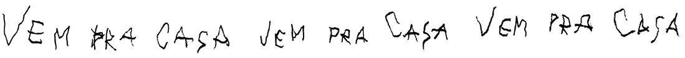

Capítulo 10
O reencontro
1
Bill Denbrough pega um táxi
O telefone estava tocando, fazendo-o acordar e sair de um sono profundo demais para ter sonhos. Ele tateou em busca do aparelho sem abrir os olhos, sem despertar completamente. Se tivesse parado de tocar naquele momento, ele teria adormecido na mesma hora sem dificuldade; teria adormecido com a mesma simplicidade e facilidade com que descia pelos morros cobertos de neve do Parque McCarron com o trenó portátil. Você corria com o trenó, se jogava em cima dele e descia no que parecia a velocidade do som. Não dava para fazer isso sendo adulto; machucava demais as bolas.
Seus dedos passearam pelo disco do telefone, escorregaram, subiram de novo. Ele tinha uma leve premonição de que seria Mike Hanlon, Mike Hanlon ligando de Derry, dizendo que ele tinha que voltar, dizendo que ele tinha que lembrar, dizendo que eles tinham feito uma promessa, que Stan Uris tinha cortado as palmas das mãos deles com o pedaço de garrafa de Coca e eles prometeram…
Só que tudo isso já tinha acontecido.
Ele tinha chegado tarde na noite anterior, pouco depois das 18h. Ele achava que, como foi a última ligação da lista de Mike, todos os outros já deviam ter chegado em horários variados; alguns talvez tivessem até passado a maior parte do dia ali. Ele mesmo não tinha visto nenhum deles nem sentia pressa de ver. Ele apenas chegou, fez o check-in, subiu para o quarto, pediu comida do serviço de quarto que, depois de servida, ele descobriu que não conseguia comer, caiu na cama e dormiu sem sonhar até aquele momento.
Bill abriu um dos olhos e procurou o telefone. O fone caiu da mesa, e ele tateou enquanto abria o outro olho. Sentia-se totalmente vazio dentro da cabeça, totalmente desligado, funcionando à base de pilhas.
Ele acabou conseguindo pegar o aparelho. Apoiou-se em um cotovelo e colocou o fone no ouvido.
— Alô?
— Bill? — Era a voz de Mike Hanlon. Nisso, pelo menos, ele acertou. Na semana anterior, ele nem se lembrava de Mike, e agora uma única palavra bastava para identificá-lo. Era um tanto maravilhoso… mas de uma maneira agourenta.
— Oi, Mike.
— Acordei você, é?
— É, acordou. Não tem problema. — Na parede acima da TV havia um quadro horrível de lagosteiros de capas de chuva e chapéus amarelos puxando redes de lagostas. Ao olhar, Bill se lembrou de onde estava: no Derry Town House na rua Upper Main. Oitocentos metros acima e do outro lado da rua ficava o Parque Bassey… a Ponte do Beijo… o canal. — Que horas são, Mike?
— Quinze pras dez.
— De que dia?
— Dia 30. — Mike pareceu achar engraçado.
— Tá. Tudo bem.
— Marquei um reencontro — disse Mike. Ele parecia tímido agora.
— É? — Bill tirou as pernas de cima da cama. — Todos vieram?
— Todos menos Stan Uris — disse Mike. Agora havia alguma coisa na voz dele que Bill não conseguiu interpretar. — Bev foi a última. Ela chegou tarde da noite ontem.
— Por que você diz última, Mike? Stan pode chegar hoje.
— Bill, Stan está morto.
— O quê? Como? O avião dele…?
— Nada do tipo — disse Mike. — Olha, se não fizer diferença pra você, acho que é melhor esperar até nos juntarmos. Seria melhor se eu pudesse contar pra todo mundo ao mesmo tempo.
— Tem a ver com isto?
— É, acho que tem. — Mike fez uma pausa breve. — Tenho certeza de que tem.
Bill sentiu o peso familiar do medo envolver seu coração de novo. Seria uma coisa com a qual dava para se acostumar tão rápido? Ou era algo que ele tinha carregado consigo, sem sentir nem pensar sobre, como acontecia com o fato inevitável de sua própria morte?
Ele esticou a mão para pegar um cigarro, acendeu e soprou o fósforo na primeira tragada.
— Ninguém se encontrou ontem?
— Não, acho que não.
— E você ainda não viu nenhum de nós.
— Não, só falei por telefone.
— Tudo bem — disse ele. — Onde vai ser o reencontro?
— Lembra onde era a velha siderúrgica?
— Na estrada Pasture, claro.
— Você está atrasado, amigão. Agora é a estrada Mall. Temos o terceiro maior shopping do estado lá. Quarenta e Oito Lojas Diferentes Sob o Mesmo Teto, Para a Sua Conveniência.
— Parece bem a-a-americano mesmo.
— Bill?
— O quê?
— Você está bem?
— Estou. — Mas seu coração estava batendo rápido demais, a ponta do cigarro estava tremendo um pouco. Ele tinha gaguejado. Mike ouviu.
Houve um momento de silêncio, e Mike disse:
— Depois do shopping, tem um restaurante chamado Jade do Oriente. Lá tem salas particulares pra festas. Reservei uma ontem. Podemos ficar com ela a tarde toda, se quisermos.
— Você acha que vai demorar tanto?
— Não sei.
— Um táxi vai saber chegar lá?
— Claro.
— Tudo bem — disse Bill. Ele escreveu o nome do restaurante no bloco ao lado do telefone. — Por que lá?
— Porque é novo, eu acho — disse Mike lentamente. — Pareceu… sei lá…
— Campo neutro? — sugeriu Bill.
— É. Acho que é isso.
— A comida é boa?
— Não sei — disse Mike. — Como é seu apetite?
Bill soprou fumaça e deu uma risadinha que era em parte tosse.
— Não tão bom, amigão.
— É — disse Mike. — Entendo.
— Meio-dia?
— Mais pra perto de 13h, eu acho. Vamos deixar Beverly roncar um pouco mais.
Bill tragou o cigarro.
— Ela está casada?
Mike hesitou de novo.
— Vamos saber de tudo mais tarde — disse ele.
— É como quando você vai pra reunião do ensino médio dez anos depois, hein? — disse Bill. — Você descobre quem está gordo, quem ficou careca, quem tem f-filhos.
— Eu queria que fosse assim — disse Mike.
— É. Eu também, Mikey. Eu também.
Ele desligou o telefone, tomou um longo banho e pediu um café da manhã que não queria e que só beliscou. Não; seu apetite não andava mesmo muito bom.
Bill ligou para a empresa de táxi Big Yellow Cab e pediu para ser buscado às 12h45, pensando que 15 minutos seriam suficientes para ele chegar à estrada Pasture (ele era totalmente incapaz de pensar nela como estrada Mall, mesmo quando viu o shopping), mas subestimou o fluxo de trânsito da hora do almoço… e o quanto Derry tinha crescido.
Em 1958, era um vilarejo grande, não mais do que isso. Havia umas 30 mil pessoas dentro dos limites municipais de Derry e talvez mais 7 mil nas cidadezinhas das redondezas.
Agora, ela tinha se tornado uma cidade. Uma cidade pequena em comparação com os padrões de Londres e Nova York, mas que estava indo muito bem pelos padrões do Maine, onde Portland, a maior cidade do estado, mal passava de 300 mil pessoas.
Conforme o táxi descia lentamente a rua Main (estamos sobre o canal agora, pensou Bill; não consigo vê-lo, mas está bem aqui, correndo no escuro) e virava na Center, seu primeiro pensamento foi bem previsível: o quanto tudo tinha mudado. Mas o pensamento previsível foi acompanhado de um grande desalento que ele jamais teria esperado. Ele se lembrava da infância ali como uma época temerosa e nervosa… não só por causa do verão de 1958, quando os sete encararam o terror, mas por causa da morte de George, pelo sonho profundo no qual os pais pareceram ter caído depois disso, pelas provocações constantes por causa da gagueira, por Bowers, Huggins e Criss indo sempre atrás deles depois da briga no Barrens
(Bowers, Huggins e Criss, meu Deus! Bowers, Huggins e Criss, meu Deus!)
e por uma sensação de que Derry era fria, de que Derry era dura, de que Derry estava cagando se qualquer um deles vivia ou morria, e muito menos se eles triunfariam sobre Pennywise, o Palhaço. O povo de Derry vivia com Pennywise em todos os seus disfarces havia muito tempo… e talvez, de alguma forma louca, tivesse até passado a compreendê-lo. A gostar dele, precisar dele. Amá-lo? Talvez. Sim, talvez isso também.
Então por que esse desalento?
Talvez só porque parecia uma mudança tão banal. Ou talvez porque Derry parecia ter perdido sua cara essencial aos olhos dele.
O Cinema Bijou não existia mais e tinha sido substituído por um estacionamento (SÓ COM AUTORIZAÇÃO, dizia a placa acima da rampa; INFRATORES ESTARÃO SUJEITOS A REBOQUE). A loja de sapatos The Shoeboat e o restaurante Bailley’s Lunch, que ficavam ao lado, também não existiam mais. Eles tinham sido substituídos por uma agência do Northern National Bank. Um placar digital na frente da estrutura sem graça de concreto mostrava a hora e a temperatura, esta última tanto em graus Fahrenheit quanto em graus Celsius. A Center Street Drug, lar do sr. Keene e local onde Bill conseguiu o remédio de asma de Eddie naquele dia, também não existia mais. A travessa Richard tinha se tornado um híbrido estranho chamado “minishopping”. Ao olhar para lá quando o táxi parou no sinal vermelho, Bill conseguiu ver uma loja de discos, uma loja de comida natural e uma loja de brinquedos e jogos com TUDO DE DUNGEONS AND DRAGONS em liquidação.
O táxi deu uma arrancada e parou.
— Vai demorar — disse o motorista. — Eu queria que todos esses malditos bancos variassem os horários de almoço. Desculpe o vocabulário se você for religioso.
— Não tem problema — disse Bill. O céu estava nublado, e agora algumas gotas de chuva bateram na janela do táxi. O rádio murmurou alguma coisa sobre um paciente que fugiu de alguma instituição mental e que era muito perigoso, depois começou a falar sobre o Red Sox. Chuvas logo cedo, depois céu limpo. Quando Barry Manilow começou a gemer sobre Mandy, que vinha e se entregava sem pedir nada em troca, o taxista desligou o rádio.
— Quando eles surgiram?
— O quê? Os bancos?
— Aham.
— Ah, no final dos anos 1960, começo dos 1970, pelo menos a maioria — disse o motorista. Ele era um homem grande com pescoço largo. Usava uma jaqueta xadrez vermelha e preta de caçador. Um boné laranja fluorescente estava enfiado em sua cabeça. Estava manchado de óleo de motor. — Receberam uma grana de reforma urbana. Partilha de receitas é o nome que dão. E assim, começaram a derrubar tudo. E os bancos chegaram. Acho que eram os únicos que poderiam vir. Diz muita coisa, não é? Reforma urbana, eles dizem. Merda pro jantar, eu digo. Desculpe o vocabulário se você for religioso. Teve muita falação dizendo que iam revitalizar o centro. É, revitalizaram muito bem. Derrubaram a maior parte das lojas antigas e construíram um monte de bancos e estacionamentos. E ainda não dá pra achar uma porra de vaga pra estacionar. Deviam pendurar a câmara municipal todinha pelo pinto. Exceto pela mulher Polock. Ela devia ser pendurada pelas tetas. Pensando bem, parece que ela não tem tetas. É achatada como uma porra de tábua. Desculpe o vocabulário se você for religioso.
— Eu sou — disse Bill, sorrindo.
— Então sai do meu táxi e vai pra porra da igreja — disse o motorista, e os dois caíram na gargalhada.
— Você mora aqui há muito tempo? — perguntou Bill.
— A vida toda. Nasci no Derry Home Hospital, e vão enterrar as porras dos meus restos mortais no Cemitério Mount Hope.
— Parece bom — disse Bill.
— Ah, tá — disse o motorista. Ele limpou a garganta, abriu a janela e cuspiu uma bola de catarro grande e verde-amarelada na chuva. A atitude dele, contraditória mas um tanto atraente, um tanto mordaz, era de alegria sombria. — O cara que pegar isso não vai precisar comprar porra de chiclete nenhum por uma semana. Desculpe o vocabulário se você for religioso.
— Nem tudo mudou — disse Bill. A fileira deprimente de bancos e estacionamentos estava ficando para trás conforme eles subiam a rua Center. Acima da colina e depois do First National, eles começaram a ganhar velocidade. — O Aladdin ainda está no lugar.
— É — concordou o motorista. — Mas por pouco. Os merdas tentaram derrubar ele também.
— Pra fazer outro banco? — perguntou Bill, em parte achando graça por descobrir que outra parte dele estava horrorizada com a ideia. Ele não conseguia acreditar que qualquer pessoa em sã consciência iria querer derrubar aquele grandioso domo do prazer com o candelabro cintilante de vidro, as escadarias da direita e da esquerda que seguiam em curva até o balcão e a cortina monumental, que não apenas se abria quando o filme começava, mas que subia em dobras mágicas, pregas e ondas, tudo iluminado em tons fabulosos de vermelho, azul, amarelo e verde enquanto roldanas nas laterais do palco gemiam e estalavam. Não o Aladdin, aquela parte chocada dele gritou. Como puderam pensar em derrubar o Aladdin pra construir um BANCO?
— Ah, era isso mesmo, um banco — disse o taxista. — Você acertou na porra da mosca, desculpe o vocabulário se você for religioso. Era o First Merchants of Penobscot County que estava de olho no Aladdin. Queriam derrubar e levantar o que estavam chamando de “complexo bancário”. Conseguiram os papéis todos na câmara municipal, e o Aladdin estava condenado. Mas um grupo formou um comitê, um pessoal que morava aqui há muito tempo, e fizeram um abaixo-assinado, fizeram passeata, gritaram e acabaram conseguindo uma reunião com a câmara. Hanlon expulsou aqueles babacas. — O taxista parecia extremamente animado.
— Hanlon? — perguntou Bill, surpreso. — Mike Hanlon?
— Isso aí — disse o motorista. Ele se virou rapidamente para olhar para Bill, mostrando um rosto redondo e ressecado, óculos de aro de chifre com velhas manchas de tinta branca. — Bibliotecário. Sujeito negro. Conhece?
— Conhecia — disse Bill, lembrando-se de como conheceu Mike em julho de 1958. Foi culpa de Bowers, Huggins e Criss de novo… é claro. Bowers, Huggins e Criss
(ah Deus)
em cada virada, desempenhando seu papel, tentáculos involuntários aproximando os sete, cada vez com mais força.
— Brincávamos juntos quando éramos crianças. Antes de eu ir embora.
— Olha só — disse o motorista. — Essa porra de mundo é muito pequeno, desculpe o…
— … vocabulário se você for religioso — concluiu Bill por ele.
— Olha só — repetiu o taxista com tranquilidade, e eles seguiram em silêncio por um tempo até ele dizer: — Mudou muito, Derry, mas sim, muita coisa ainda está aqui. O Town House, onde peguei você. A Torre de Água no Parque Memorial. Se lembra desse lugar, moço? Quando éramos crianças, achávamos que era assombrando.
— Lembro, sim — disse Bill.
— Olha, ali está o hospital. Reconhece?
Eles estavam passando pelo Derry Home Hospital à direita. Atrás dele, o Penobscot corria em direção ao ponto de encontro com o Kenduskeag. Sob o céu chuvoso da primavera, o rio estava azul-acinzentado. O hospital de que Bill se lembrava, um prédio branco com duas alas e três andares, ainda estava lá, mas agora estava cercado, diminuído por um complexo de prédios, talvez uns dez. Ele conseguia ver um estacionamento à esquerda, e parecia haver mais de quinhentos carros estacionados lá.
— Meu Deus, não é um hospital, é uma porra de campus de faculdade! — exclamou Bill.
O taxista gargalhou.
— Como não sou religioso, vou desculpar seu vocabulário. Verdade, é quase tão grande agora quanto a Eastern Maine em Bangor. Tem laboratórios de radiação, um centro de terapia e seiscentos quartos e lavanderia própria e só Deus sabe mais o quê. O velho hospital ainda está lá, mas é só parte administrativa agora.
Bill teve uma estranha sensação dupla na mente, o tipo de sensação que ele se lembrava de ter tido na primeira vez que viu um filme em 3D. De tentar juntar duas imagens que não encaixavam. Dava para enganar os olhos e o cérebro para que executassem o truque, ele lembrava, mas você tinha chance de acabar com uma tremenda dor de cabeça… e ele conseguia sentir uma chegando agora. Nova Derry, tudo bem. Mas a velha Derry ainda estava presente, como o prédio de madeira do Home Hospital. A velha Derry estava quase toda enterrada debaixo de construções novas… mas seus olhos eram arrastados incontrolavelmente para ela… para procurá-la.
— O pátio de trens também deve ter sido destruído, não? — perguntou Bill.
O motorista riu de novo, satisfeito.
— Pra alguém que se mudou quando era criança, você tem boa memória, moço. — Bill pensou: Você devia ter me visto semana passada, meu amigo de vocabulário caprichado. — Ainda está lá, mas não passa de ruínas e trilhos enferrujados agora. Os trens de carga nem param mais. Um cara queria comprar o terreno e montar um centro de entretenimento completo, com minigolfe, jaulas pra rebater bolas de beisebol, campo de golfe, kart, fliperama, não sei mais o quê, mas tem alguma confusão sobre quem é o dono do terreno agora. Acho que ele vai acabar conseguindo, porque é um cara persistente, mas agora está com processo nos tribunais.
— E o canal — murmurou Bill quando eles saíram da rua Outer Center e entraram na estrada Pasture, que, como Mike dissera, agora tinha uma placa verde dizendo ESTRADA MALL. — O canal ainda está no lugar.
— É — disse o motorista. — Ele sempre vai ficar no mesmo lugar, eu acho.
Agora o Derry Mall estava à esquerda de Bill e, quando eles passaram, ele teve aquela estranha sensação dupla de novo. Quando eles eram crianças, aquilo tudo era um campo comprido e amplo cheio de mato e enormes girassóis que marcava o lado nordeste do Barrens. Atrás dele, a oeste, ficava o conjunto habitacional Old Cape. Ele conseguia se lembrar deles explorando esse campo, tomando o cuidado para não cair no buraco aberto da siderúrgica Kitchener, que tinha explodido no domingo de Páscoa do ano de 1906. O campo era cheio de relíquias, e eles as descobriam com o interesse solene de arqueólogos explorando ruínas egípcias: tijolos, conchas, pedaços de ferro com parafusos enferrujados pendurados, pedaços de vidro, garrafas cheias de gosma não identificada com cheiro do pior veneno do mundo. Uma coisa ruim tinha acontecido perto dali, na cascalheira perto do lixão, mas ele ainda não conseguia lembrar. Só conseguia se lembrar de um nome, Patrick Humboldt, e que tinha alguma coisa a ver com uma geladeira. E alguma coisa relacionada a um pássaro que tinha perseguido Mike Hanlon. O que…?
Ele balançou a cabeça. Fragmentos. Pedaços de palha ao vento. Só isso.
O campo não existia mais, assim como os restos da siderúrgica. Bill se lembrou de repente da grande chaminé. Coberta de azulejos, escurecida por causa da fuligem nos três últimos metros, ela ficava no meio da grama alta como um cano gigantesco. Eles conseguiram subir e andaram em cima, com os braços esticados como se estivessem na corda bamba, rindo…
Ele balançou a cabeça como se para afastar a miragem do shopping, um aglomerado feio de prédios com placas que diziam SEARS, J. C. PENNEY, WOOLWORTH’S, CVS, YORK’S STEAK HOUSE, WALDENBOOKS e dezenas de outras lojas. Havia caminhos pavimentados entrando e saindo de estacionamentos. O shopping não sumiu porque não era miragem. A siderúrgica Kitchener não existia mais, e o campo que cresceu ao redor das ruínas dela também. O shopping era realidade, não as lembranças.
Mas, de alguma forma, ele não acreditava nisso.
— Aqui, moço — disse o taxista. Ele parou no estacionamento de um prédio que parecia um grande pagode de plástico. — Um pouco atrasado, mas antes tarde do que nunca, certo?
— Sem dúvida — disse Bill. Ele deu uma nota de cinco para o motorista. — Fique com o troco.
— Que beleza! — exclamou o motorista. — Se precisar de alguém pra te levar, liga pra Big Yellow e pede pelo Dave. Me peça pelo nome.
— Vou pedir o sujeito religioso — disse Bill, sorrindo. — O que já escolheu o túmulo no Mount Hope.
— Isso mesmo — disse Dave, rindo. — Tenha um bom-dia, moço.
— Você também, Dave.
Ele ficou de pé na chuva leve por um momento e observou o táxi se afastar. Deu-se conta de que pretendia fazer mais uma pergunta ao motorista, mas que tinha esquecido, talvez de propósito.
Ele pretendia perguntar a Dave se ele gostava de morar em Derry.
Abruptamente, Bill Denbrough se virou e entrou no Jade do Oriente. Mike Hanlon estava no saguão, sentado em uma cadeira de vime com encosto enorme. Ele ficou de pé, e Bill sentiu uma irrealidade profunda tomar conta dele, por dentro dele. Aquela sensação de duplo estava de volta, mas agora estava bem, bem pior.
Ele se lembrava de um garoto que tinha 1,60 metro, era magro e ágil. À sua frente estava um homem com 1,75 metro. Era esquelético. As roupas pareciam penduradas nele. E as linhas no rosto diziam que ele tinha quarenta e muitos anos, e não apenas uns 38.
O choque de Bill deve ter ficado evidente no rosto, porque Mike disse baixinho:
— Sei como estou.
Bill ficou vermelho e disse:
— Não está ruim, Mike, é só que eu me lembro de você criança. Só isso.
— É mesmo?
— Você parece meio cansado.
— Eu estou meio cansado — disse Mike —, mas vou sobreviver. Eu acho. — Ele sorriu, e o sorriso iluminou seu rosto. Nele, Bill viu o garoto que conheceu 27 anos antes. Assim como o velho Home Hospital de madeira tinha sido cercado de vidro moderno e cimento, o garoto que Bill conhecera foi cercado dos acessórios inevitáveis da vida adulta. Havia rugas na testa, linhas nos cantos da boca que iam quase até o queixo, e o cabelo estava ficando grisalho dos dois lados nas têmporas. Mas, assim como o velho hospital, que estava cercado, mas ainda estava lá, visível, o garoto que Bill conhecera também estava.
Mike esticou a mão e disse:
— Bem-vindo de volta a Derry, Big Bill.
Bill ignorou a mão e abraçou Mike. Mike o abraçou com força, e Bill conseguiu sentir o cabelo dele, duro e encaracolado, em seu ombro e na lateral do pescoço.
— Seja lá o que houver de errado, Mike, vamos resolver — disse Bill. Ele ouviu o som rouco de lágrimas em sua garganta e não se importou. — Vencemos uma vez e somos capazes de v-vencer de n-n-novo.
Mike se afastou dele e segurou-o com os braços esticados; apesar de ainda estar sorrindo, havia brilho demais em seus olhos. Ele pegou o lenço e os secou.
— Claro, Bill — disse ele. — Pode apostar.
— Cavalheiros, podem me acompanhar? — perguntou a recepcionista. Era uma mulher oriental sorridente com um delicado quimono rosa, no qual um dragão se contorcia e curvava o rabo metálico. O cabelo escuro estava preso na cabeça com pentes de marfim.
— Sei o caminho, Rose — disse Mike.
— Muito bem, sr. Hanlon. — Ela sorriu para os dois. — Vocês são muito amigos, acredito.
— Acho que somos — disse Mike. — Por aqui, Bill.
Ele o levou por um corredor escuro, passando pelo salão principal em direção a uma porta com uma cortina de contas.
— Os outros…? — disse Bill.
— Todos aqui agora — disse Mike. — Todos que puderam vir.
Bill hesitou por um momento do lado de fora, com um medo repentino. Não era o desconhecido que o assustava, nem o sobrenatural; era o simples conhecimento de que estava quase 40 centímetros mais alto do que era em 1958 e sem a maior parte do cabelo. Ele ficou desconfortável de repente, quase apavorado com a ideia de ver todos eles de novo, com os rostos infantis quase desaparecidos, quase enterrados sob a mudança, como o velho hospital. Com bancos construídos na mente onde antes palácios mágicos ficavam.
Nós crescemos, pensou ele. Não achamos que aconteceria, não naquela época, não conosco. Mas aconteceu, e se eu entrar aí, vai ser real. Somos todos adultos agora.
Ele olhou para Mike, repentinamente confuso e tímido.
— Como eles estão? — ele se ouviu perguntando com voz falha. — Mike… como eles estão?
— Entre e descubra — disse Mike com delicadeza, e levou Bill para a salinha particular.
2
Bill Denbrough dá uma olhada
Talvez fosse apenas a penumbra da sala que provocasse a ilusão, que durou por um brevíssimo momento, mas Bill se perguntou depois se não era alguma espécie de mensagem exclusivamente para ele: que o destino também podia ser gentil.
Naquele breve momento, pareceu que nenhum deles tinha crescido, que seus amigos tinham feito um ato de Peter Pan e ainda eram todos crianças.
Richie Tozier estava recostado na cadeira a ponto de tocar a parede e dizendo alguma coisa para Beverly Marsh, que estava com a mão sobre a boca para esconder uma risadinha; Richie mostrava um sorriso espertalhão no rosto que era perfeitamente familiar. Ali estava Eddie Kaspbrak, sentado à esquerda de Beverly, e na frente dele na mesa, ao lado do copo de água, uma garrafinha plástica com uma tampa com gatilho no alto. Os detalhes eram um pouco mais modernos, mas o objetivo era obviamente o mesmo: uma bombinha. Do outro lado da mesa, observando o trio com expressão de ansiedade, diversão e concentração, estava Ben Hanscom.
Bill sentiu vontade de colocar a mão na cabeça e percebeu com diversão e tristeza que, naquele segundo, quase passou a mão na careca para ver se o cabelo tinha voltado por magia; aquele cabelo ruivo e fino que ele começou a perder no começo da faculdade.
Aquilo estourou a bolha. Ele viu que Richie não estava de óculos e pensou: Ele deve usar lentes de contato agora, é o tipo de coisa que ele faria. Ele odiava aqueles óculos. As camisetas e calças de amarrar que ele costumava usar foram substituídas por um terno que não foi comprado em loja de departamento. Bill estimava estar olhando para uma vestimenta de novecentos dólares feita por alfaiate.
Beverly Marsh (se é que o nome dela ainda era Marsh) tinha se tornado uma mulher incrivelmente linda. Em vez do rabo de cavalo casual, o cabelo dela, que era quase exatamente do mesmo tom que o dele antes, caía sobre os ombros da blusa branca lisa Ship ‘n Shore em uma torrente de cor branda. Na luz turva, ele apenas brilhava como um amontoado de brasas. Na luz do dia, mesmo em um dia nublado como aquele, Bill imaginava que pegava fogo. E ele se viu se perguntando como seria enfiar as mãos naquele cabelo. A história mais velha do mundo, pensou ele com ironia. Amo minha esposa, mas ah, você.
Eddie, era estranho, mas era verdade, tinha crescido e passado a se parecer bastante com Anthony Perkins. Seu rosto tinha rugas prematuras (apesar de nos trejeitos ele parecer mais jovem do que Richie e Ben), e ele parecia ainda mais velho pelos óculos sem aro que usava — óculos que você imaginaria um advogado britânico usando quando se aproximava do banco dos réus ou mexia nos arquivos. Seu cabelo estava curto, em um estilo antiquado que foi conhecido como Ivy League no final dos anos 1950 e começo dos 1960. Estava usando uma jaqueta quadriculada berrante que parecia ter sido tirada da arara de liquidação de uma loja de roupas masculinas prestes a fechar… mas o relógio no pulso era Patek Philippe, e o anel no mindinho da mão direita tinha um rubi. A pedra era grande e ostentosa demais para não ser verdadeira.
Ben era quem tinha realmente mudado, e, ao olhar para ele de novo, Bill sentiu uma irrealidade tomar conta dele. O rosto era o mesmo, e o cabelo, embora grisalho e mais comprido, estava penteado do mesmo jeito incomum, dividido do lado direito. Mas Ben estava magro. Estava sentado confortavelmente na cadeira, com o colete de couro sem enfeites aberto e exibindo uma camisa azul de cambraia por baixo. Usava uma calça Levi’s com corte reto, botas de caubói e um cinto largo com fivela surrada de prata. As roupas caíam bem em um corpo magro e de quadris estreitos. Ele usava uma pulseira com aros grossos em um pulso, não de ouro, mas de cobre. Ele ficou magro, pensou Bill. É uma sombra de quem era antes, podemos dizer… O velho Ben ficou magro. As maravilhas não terminam nunca.
Houve um momento de silêncio entre os seis que não podia ser descrito. Foi um dos momentos mais estranhos que Bill já viveu na vida. Stan não estava lá, mas havia um sétimo elemento mesmo assim. Ali, naquela salinha particular de um restaurante, Bill sentiu a presença com tanta intensidade que era quase personificada, mas não como um velho de túnica branca com uma foice no ombro. Era o ponto branco no mapa que ficava entre 1958 e 1985, uma área que um explorador poderia chamar de o Grande Não Sei. Bill se perguntou o que exatamente havia lá. Beverly Marsh de saia curta que deixava à mostra a maior parte das pernas longas e enérgicas, uma Beverly Marsh de botas brancas sem salto, com o cabelo dividido no meio e alisado? Richie Tozier carregando um cartaz que dizia PAREM A GUERRA de um lado e TIREM OS OFICIAIS DO CAMPUS do outro? Ben Hanscom de capacete amarelo com adesivo da bandeira na frente, dirigindo uma escavadeira debaixo de um guarda-sol de lona, sem camisa, mostrando uma barriga cada vez menos protuberante por cima da calça? A sétima criatura era negra? Sem relação com H. Rap Brown nem Grandmaster Flash, não esse cara, esse cara usava camisas brancas e calças marrons da J. C. Penney, se sentava em um cubículo de biblioteca na Universidade do Maine e escrevia trabalhos sobre a origem das notas de rodapé e as possíveis vantagens dos números ISBN no catálogo de livros enquanto manifestantes caminhavam do lado de fora e Phil Ochs cantava “Richard Nixon, encontre outro país do qual participar” e homens morriam com a barriga estourada em vilarejos cujos nomes eles não conseguiam pronunciar; ele ficava ali sentado dedicado ao estudo (Bill o via), que estava sob um raio de luz branca de inverno, com o rosto sóbrio e absorto, sabendo que ser bibliotecário era chegar o mais perto que qualquer ser humano poderia chegar de se sentar no assento mais alto do motor da eternidade. Ele era o sétimo? Ou era um jovem de pé na frente do espelho, olhando para a forma como a testa crescia, olhando para o pente cheio de cabelos ruivos que caíam, olhando para uma pilha de cadernos da faculdade sobre a mesa refletida no espelho, cadernos com o primeiro rascunho completo e bagunçado de um romance chamado Joanna, que seria publicado um ano depois?
Algum dos itens anteriores, todos os itens anteriores, nenhum dos itens anteriores.
Não importava, na verdade. O sétimo estava presente, e naquele momento todos sentiram… e talvez tenham entendido melhor o poder maligno da coisa que os trouxe de volta. A Coisa está viva, pensou Bill, sentindo frio por baixo da roupa. Olho da salamandra, rabo do dragão, Mão da Glória… fosse o que a Coisa fosse, ela está aqui de novo, em Derry. A Coisa.
E ele sentiu de repente que a Coisa era o sétimo; que a Coisa e o tempo eram intercambiáveis, que a Coisa usava os rostos de todos eles, assim como os milhares de outros com os quais tinha aterrorizado e matado… e a ideia de que a Coisa pudesse ser eles era a ideia mais apavorante de todas. O quanto de nós ficou aqui?, pensou ele com terror crescente e repentino. O quanto de nós nunca saiu dos canos e esgotos onde a Coisa vivia… e onde a Coisa se alimentava? Foi por isso que esquecemos? Porque parte de cada um de nós nunca teve futuro, nunca cresceu, nunca saiu de Derry? É por isso?
Ele não viu respostas nos rostos deles… só suas próprias perguntas refletidas.
Pensamentos se formam e somem em questão de segundos ou milissegundos; criam seus próprios intervalos de tempo, e tudo isso se passou pela mente de Bill Denbrough em um espaço de não mais de cinco segundos.
E então, Richie Tozier, recostado contra a parede, sorriu de novo e disse:
— Minha nossa, olhem isso. Bill Denbrough escolheu o visual do aeroporto de mosquito. Há quanto tempo você encera a cabeça, Big Bill?
E Bill, que não fazia a menor ideia do que poderia sair, abriu a boca e se ouviu dizer:
— Foda-se você e o cavalo que você monta, Boca de Lixo.
Houve um momento de silêncio e a sala acabou explodindo em gargalhadas. Bill andou até eles e começou a apertar mãos, e apesar de haver alguma coisa de horrível no que ele sentia agora, havia também algo reconfortante: a sensação de ter voltado para casa de vez.
3
Ben Hanscom fica magro
Mike Hanlon pediu bebidas e, como se para compensar o silêncio anterior, todos começaram a falar ao mesmo tempo. Beverly Marsh agora era Beverly Rogan, no fim das contas. Ela disse que era casada com um homem maravilhoso em Chicago que transformou a vida dela e que, por alguma magia benigna, conseguiu transformar o talento simples da esposa para costurar em um bem-sucedido negócio de fabricação de vestidos. Eddie Kaspbrak era dono de uma empresa de limusines em Nova York.
— Pelo que sei, minha esposa pode estar na cama com o Al Pacino agora — disse ele, sorrindo docemente, e a sala quase desabou.
Todos sabiam o que aconteceu na vida de Ben e Bill, mas Bill tinha a sensação peculiar de que as pessoas que eles conheciam quando crianças não fizeram associação pessoal entre si e os nomes deles (o de Ben como arquiteto e o seu como escritor) até muito recentemente. Beverly tinha exemplares em formato brochura de Joanna e A correnteza negra na bolsa e pediu que ele autografasse os dois. Bill fez o que ela pediu e reparou que eles estavam em perfeitas condições, como se tivessem sido comprados na loja do aeroporto quando ela saiu do avião.
Da mesma forma, Richie disse para Ben o quanto admirava o centro de convenções da BBC em Londres… mas havia uma luz intrigada em seus olhos, como se ele não conseguisse associar aquele prédio com o homem… ou com o garoto gordo e sério que mostrou a eles como inundar metade do Barrens com tábuas velhas e uma porta de carro enferrujada.
Richie era disc-jóquei na Califórnia. Ele contou que era conhecido como o Homem das Mil Vozes, e Bill resmungou:
— Meu Deus, Richie, suas Vozes sempre foram tão ruins.
— O elogio não vai levar você a lugar nenhum, mestre — respondeu Richie com altivez.
Quando Beverly perguntou se ele usava lentes de contato, Richie disse em voz baixa:
— Chega mais perto, gatinha. Olha nos meus olhos. — Beverly olhou e exclamou com prazer quando Richie inclinou a cabeça um pouco e ela conseguiu ver a parte de baixo das lentes gelatinosas Hydromist que ele usava.
— A biblioteca continua igual? — perguntou Ben a Mike Hanlon.
Mike pegou a carteira e mostrou uma foto da biblioteca tirada de cima. O gesto foi o de um homem orgulhoso mostrando fotos dos filhos quando alguém perguntava da família.
— Um cara tirou essa foto de um avião — disse ele conforme a foto foi passando de mão em mão. — Estou tentando convencer a câmara municipal ou algum próspero doador particular a doar fundos suficientes pra ampliar e fazer um mural na biblioteca infantil. Até agora, nada. Mas é uma boa foto, não é?
Todos concordaram que era. Ben ficou mais tempo com ela na mão, olhando fixamente. Por fim, bateu o dedo no corredor de vidro que unia os dois prédios.
— Você reconhece isso de outro lugar, Mike?
Mike sorriu.
— É seu centro de comunicações — disse ele, e os seis caíram na gargalhada.
As bebidas chegaram. Eles se sentaram.
Aquele silêncio, repentino, constrangido e desconcertante se espalhou de novo. Eles se entreolharam.
— E então? — perguntou Beverly com a voz doce e levemente rouca. — A que bebemos?
— A nós — disse Richie de repente. E agora, ele não estava sorrindo. Ele olhou nos olhos de Bill e, com uma força tamanha que ele mal conseguiu suportar, Bill lembrou-se de estar com Richard no meio da rua Neibolt, depois que a coisa que talvez fosse um palhaço e que talvez fosse um lobisomem tinha desaparecido, os dois abraçados e chorando. Quando ele pegou o copo, sua mão estava tremendo, e um pouco da bebida derramou no guardanapo.
Richie ficou de pé lentamente, e, um a um, os outros acompanharam: primeiro Bill, depois Ben e Eddie, Beverly e, por fim, Mike Hanlon.
— A nós — disse Richie, e como a mão de Bill, sua voz tremeu um pouco. — Ao Clube dos Otários de 1958.
— Aos Otários — disse Beverly, achando um pouco de graça.
— Aos Otários — disse Eddie. Seu rosto estava pálido e velho por trás dos óculos sem aro.
— Aos Otários — concordou Ben. Um sorriso leve e sofrido surgiu nos cantos dos lábios dele.
— Aos Otários — disse Mike Hanlon baixinho.
— Aos Otários — concluiu Bill.
Eles bateram copos. Eles beberam.
Aquele silêncio voltou, e desta vez Richie não acabou com ele. Desta vez, o silêncio pareceu necessário.
Eles voltaram a sentar e Bill disse:
— Manda ver, Mike. Conta pra gente o que está acontecendo aqui e o que a gente pode fazer.
— Vamos comer primeiro — disse Mike. — E conversar depois.
Então eles comeram… e comeram bem e por bastante tempo. Como aquela velha piada sobre o homem condenado, pensou Bill, mas seu apetite estava melhor naquele dia do que em uma eternidade… desde que era criança, ele ficou tentado a pensar. A comida não era incrivelmente boa, mas não chegava nem perto de ruim, e era bem farta. Os seis começaram a trocar pratos — costela, moo goo gai pan, asas de frango delicadamente cozidas, rolinhos primavera, castanhas envoltas em bacon, tiras de carne em espetinhos de madeira.
Eles começaram com uma entrada pu-pu, e Richie tratou de grelhar um pouco de tudo de forma infantil e divertida na chama no meio do prato que ele estava dividindo com Beverly, inclusive meio rolinho primavera e alguns feijões vermelhos.
— Flambado na minha mesa, adoro — disse ele para Ben. — Eu comeria carne-seca processada se fosse flambada na minha mesa.
— E provavelmente comeu — observou Bill. Beverly riu tanto por causa disso que teve que cuspir um pouco de comida no guardanapo.
— Ah, Deus, acho que vou chamar o Raul — disse Richie com uma imitação estranhamente precisa de Don Pardo, e Beverly riu ainda mais, até ficar vermelha.
— Para, Richie — disse ela. — Estou avisando.
— Aviso recebido — disse Richie. — Coma bem, querida.
Rose em pessoa levou a sobremesa: um baked Alaska enorme que ela acendeu na cabeceira da mesa, onde Mike estava.
— Mais flambado na mesa — disse Richie, com a voz de um homem que morreu e foi para o céu. — Deve ser a melhor refeição que já comi na vida.
— Mas é claro — disse Rose com modéstia.
— Se eu soprar isso, meu desejo se realiza? — perguntou ele.
— No Jade do Oriente, todos os desejos se realizam, senhor.
O sorriso de Richie hesitou de repente.
— Aprovo a ideia — disse ele —, mas sabe, duvido muito da veracidade.
Eles quase destruíram o baked Alaska. Quando Bill se recostou na cadeira, com a barriga forçando a cintura da calça, ele reparou nos copos sobre a mesa. Parecia haver centenas deles. Ele sorriu um pouco, dando-se conta de que tinha tomado dois martínis antes do almoço e Deus sabia quantas garrafas de cerveja Kirin junto com a comida. Os outros beberam do mesmo jeito. No estado deles, pedaços fritos de um pino de boliche teriam gosto bom. Mas ele não se sentia bêbado.
— Não como assim desde que era criança — disse Ben. Todos olharam para ele, e um leve tom rosado cobria suas bochechas. — Literalmente. Deve ter sido a maior refeição que comi desde o segundo ano do ensino médio.
— Você fez dieta? — perguntou Eddie.
— Fiz — disse Ben. — Fiz sim. A Dieta da Liberdade de Ben Hanscom.
— O que aconteceu? — perguntou Richie.
— Vocês não querem saber essa história antiga… — Ben se mexeu com desconforto.
— Não posso falar por todo mundo — disse Bill —, mas eu quero. Vamos lá, Ben. Conta. O que transformou Monte de Feno Calhoun no modelo de revista que estamos vendo agora?
Richie deu uma risada.
— Monte de Feno, é. Eu tinha me esquecido disso.
— Não é bem uma história — disse Ben. — Não tem história, na verdade. Depois do verão, depois de 1958, ficamos em Derry mais dois anos. Aí minha mãe perdeu o emprego e acabamos nos mudando pro Nebraska, porque ela tinha uma irmã lá que ofereceu de nos abrigar até minha mãe conseguir botar as coisas nos eixos. Não foi muito bom. A irmã dela, minha tia Jean, era uma vaca sovina que tinha que ficar repetindo qual era seu lugar no mundo, que nós tínhamos sorte de minha mãe ter uma irmã que podia ser caridosa conosco, que tínhamos sorte de não estarmos dependendo da assistência social, essas coisas. Eu era tão gordo que dava nojo nela. Ela não conseguia parar de falar. “Ben, você devia fazer mais exercícios. Ben, você vai ter um ataque do coração antes dos quarenta se não perder peso. Ben, com tantas criancinhas passando fome no mundo, você devia ter vergonha.”
Ele fez uma pausa momentânea e tomou um gole de água.
— A questão era que ela também mencionava as criancinhas passando fome se eu não limpasse o prato.
Richie riu e assentiu.
— Enfim, o país estava saindo de uma recessão e minha mãe demorou quase um ano pra encontrar trabalho firme. Quando saímos da casa de tia Jean em La Vista e fomos pra uma nossa em Omaha, eu estava com 40 quilos a mais do que quando vocês me conheceram. Acho que o motivo de ganhar esse peso foi pra contrariar minha tia Jean.
Eddie assobiou.
— Isso faria você ter uns…
— Uns 95 quilos — disse Ben com seriedade. — Eu estudava na East Side High School em Omaha, e as aulas de educação física eram… ah, bem ruins. Os outros garotos me chamavam de Barril. Acho que já dá pra vocês terem uma ideia.
“A provocação prosseguiu por uns sete meses, e então, um dia, quando estávamos trocando de roupa no vestiário depois da aula, dois ou três caras começaram a… dar tapas na minha barriga. Diziam que eram ‘bofetes na gordura’. Em pouco tempo, mais dois ou três se juntaram a eles. Depois, mais quatro ou cinco. Logo eram todos eles, correndo atrás de mim no vestiário e pelo corredor, batendo na minha barriga, na minha bunda, nas minhas costas, nas minhas pernas. Fiquei com medo e comecei a gritar. Isso fez todos eles rirem como loucos.”
Ele olhou para baixo e arrumou os talheres cuidadosamente.
— Sabe, esse dia é a última vez que consigo me lembrar de pensar em Henry Bowers até Mike me ligar dois dias atrás. O garoto que começou era um moleque de fazenda com mãos enormes, e enquanto eles corriam atrás de mim, eu me lembro de pensar que Henry tinha voltado. Acho… não, eu sei que foi aí que entrei em pânico.
“Eles me perseguiram pelo corredor, pelos armários onde os atletas guardavam as coisas. Eu estava nu e vermelho como uma lagosta. Tinha perdido qualquer senso de dignidade e… e de mim mesmo, acho que posso dizer. De onde eu estava. Eu estava gritando e pedindo ajuda. E eles corriam atrás de mim gritando ‘Bofetes na gordura! Bofetes na gordura! Bofetes na gordura!’ Havia um banco…”
— Ben, você não precisa se fazer passar por isso — disse Beverly de repente. O rosto dela estava pálido e cinzento. Ela estava brincando com o copo de água e quase o derrubou.
— Deixa ele terminar — disse Bill.
Ben olhou para ele por um momento e assentiu.
— Tinha um banco no final do corredor. Caí por cima dele e bati a cabeça. Eles me cercaram em um ou dois minutos, e então uma voz disse: ‘Pronto. Já chega. Podem ir trocar de roupa.’
“Era o treinador, bem ali na porta, com a calça de moletom azul com a listra branca nas laterais e a camiseta branca. Não dava pra saber há quanto tempo ele estava ali. Todos olharam para ele, alguns sorrindo, alguns com culpa, alguns com expressão meio vazia. Eles foram embora. E eu caí no choro.
“O treinador ficou ali na porta, mandando todos de volta pro ginásio, me olhando, olhando o garoto gordo nu com a pele vermelha dos bofetes na gordura, vendo o garoto gordo chorando no chão.
“E ele disse depois de um tempo: ‘Benny, por que você não cala essa porra de boca?’
“Fiquei tão chocado de ouvir um professor usar aquela palavra que calei a boca. Olhei para ele, e ele se aproximou e se sentou no banco por cima do qual eu caí. Ele se inclinou por cima de mim, e o apito ao redor do pescoço dele balançou e bateu na minha testa. Por um segundo, pensei que ele fosse me beijar, sei lá, e me encolhi pra me afastar dele. Mas o que ele fez foi segurar uma teta em cada mão e apertar. Depois, ele afastou as mãos e esfregou na calça como se tivesse encostado em alguma coisa suja.
“‘Você acha que vou te consolar?’, perguntou ele. ‘Não vou. Você enoja esses garotos e também me enoja. Temos motivos diferentes, mas isso é porque eles são crianças e eu, não. Eles não sabem por que você os enoja. É porque vejo você enterrando o bom corpo que Deus te deu em uma pilha enorme de gordura. É permissividade burra demais e me dá vontade de vomitar. Agora me escuta, Benny, porque é a única vez que vou dizer isso pra você. Tenho um time de futebol americano pra treinar, e de basquete, e corrida, e no meio disso tenho a equipe de natação. Então só vou dizer uma vez. Você é gordo aqui.’ E bateu na minha testa, bem onde o apito tinha batido. ‘É onde todo mundo é gordo. Se você colocar de dieta o que você tem entre as orelhas, vai perder peso. Mas caras como você nunca perdem.’”
— Que babaca! — disse Beverly com indignação.
— É — disse Ben, sorrindo. — Mas ele não sabia que era um babaca de tão burro que era. Ele devia ter visto Jack Webb naquele filme The D. I. umas sessenta vezes e achava mesmo que estava me fazendo um favor. No fim das contas, estava mesmo. Porque pensei em uma coisa naquele momento. Eu pensei…
Ele afastou o olhar e franziu a testa, e Bill teve a estranha sensação de que sabia o que Ben ia dizer antes mesmo de ele falar.
— Falei que a última vez que me lembro de pensar em Henry Bowers foi quando os outros garotos estavam correndo atrás de mim e me batendo. Mas quando o treinador estava se levantando pra ir embora, essa foi a última vez que pensei no que fizemos no verão de 1958. Pensei…
Ele hesitou de novo, olhou para cada um deles e pareceu procurar alguma coisa em seus rostos. Ben prosseguiu com cautela.
— Pensei no quanto éramos bons juntos. Pensei no que fizemos e em como fizemos, e de repente percebi que, se o treinador tivesse que encarar uma coisa daquelas, o cabelo dele ficaria todo branco de uma vez e o coração dele pararia no peito como um relógio velho. Não era justo, claro, mas ele não foi justo comigo. O que aconteceu foi bem simples…
— Você ficou puto — disse Bill.
Ben sorriu.
— É, isso mesmo — disse ele. — Eu gritei “Treinador!”
“Ele se virou e me olhou. ‘Você disse que treina corrida?’, eu perguntei.
“‘Isso mesmo’, disse ele. ‘Não que importe pra você.’
“‘Me escuta, seu filho da puta burro e cabeça-dura’, eu disse, e o queixo dele caiu e os olhos saltaram. ‘Vou entrar na equipe de corrida em março. O que você acha disso?’
“‘Acho melhor você fechar a boca antes de ela te meter em confusão’, disse ele.
“‘Vou correr mais rápido do que todos os seus atletas’, eu disse. ‘Vou correr mais rápido do que o seu melhor. E então, quero uma porra de pedido de desculpas de você.’
“Ele fechou os punhos, e por um minuto eu pensei que ele ia voltar e me dar porrada. Mas acabou abrindo as mãos. ‘Vai falando, gordo’, disse ele baixinho. ‘Sua boca é rápida. Mas no dia em que você conseguir correr mais rápido do que meu melhor atleta, vou pedir demissão daqui e voltar a colher milho.’ E foi embora.”
— Você perdeu peso? — perguntou Richie.
— Bem, perdi — disse Ben. — Mas o treinador estava errado. Não começou na minha cabeça. Começou com minha mãe. Fui pra casa naquela noite e falei pra ela que queria perder peso. Acabamos tendo uma briga enorme, com nós dois chorando. Ela começou com a mesma ladainha: que eu não era gordo, só tinha ossos grandes, e um garoto grande que ia ser um homem grande tinha que comer bem pra se manter. Era… uma questão de segurança pra ela, eu acho. Era assustador pra ela tentar criar um filho sozinha. Ela não tinha estudo nem capacitação, só disposição pra trabalhar duro. E quando podia me dar um segundo prato de comida… ou quando podia olhar pra mim do outro lado da mesa e ver que eu estava bem e robusto…
— Ela sentia que estava vencendo a batalha — disse Mike.
— Aham. — Ben tomou o resto da cerveja e limpou um bigode de espuma do lábio superior com as costas da mão. — Então a maior luta não foi com a minha cabeça. Foi com ela. Ela não quis aceitar, demorou meses. Não ajustava minhas roupas nem comprava novas. Eu tinha começado a correr, corria pra todo lado, e às vezes meu coração batia tão forte que eu achava que ia desmaiar. As primeiras corridas de mais de um quilômetro terminaram comigo vomitando e desmaiando. Depois, eu só vomitei por um tempo. E depois de mais um tempo, eu tinha que segurar a calça enquanto corria.
“Comecei a entregar jornais e corria com a bolsa pendurada no pescoço, batendo no peito, enquanto segurava a calça. Minhas camisas começaram a parecer velas de barco. E nas noites em que eu ia pra casa e só comia metade do que tinha no prato, minha mãe começava a chorar e dizia que eu estava passando fome, me matando, que eu não amava mais ela, que não ligava pro quanto ela se esforçava e trabalhava pra mim.”
— Meu Deus — murmurou Richie, e acendeu um cigarro. — Não sei como você aguentou, Ben.
— Mantive o rosto do treinador em mente — disse Ben. — Fiquei lembrando a forma como ele olhou pra mim depois de segurar minhas tetas no corredor do vestiário masculino. Foi assim que consegui. Comprei umas calças jeans novas e umas roupas com o dinheiro da entrega de jornais, e o coroa no apartamento do primeiro andar usou o furador pra fazer buracos novos no meu cinto. Uns cinco, pelo que lembro. Acho que devo ter me lembrado da outra vez em que precisei comprar uma calça jeans nova, quando Henry me empurrou no Barrens naquele dia e a calça ficou toda rasgada.
— É — disse Eddie, sorrindo. — E você me contou sobre o leite achocolatado. Se lembra disso?
Ben assentiu.
— Se eu lembrei — prosseguiu ele —, foi só por um segundo. Apareceu e sumiu. Na mesma época, comecei a ter aulas de saúde e nutrição na escola, e descobri que dava para comer praticamente qualquer coisa verde e crua que você quisesse sem ganhar peso. Um dia, minha mãe serviu uma salada com alface e espinafre cru, pedaços de maçã e um restinho de presunto. Eu nunca fui fã de comida de coelho, mas repeti duas vezes e fiquei repetindo pra minha mãe o quanto estava bom.
“Isso ajudou muito a resolver o problema. Ela não ligava muito para o que eu comia, desde que comesse muito. Ela me entupiu de salada. Comi isso durante três anos. Havia vezes em que eu tinha que me olhar no espelho pra ter certeza de que meu nariz não estava tremendo.”
— O que aconteceu com o treinador? — perguntou Eddie. — Você foi pra equipe de corrida? — Ele botou a mão na bombinha, como se a ideia de correr o tivesse feito se lembrar disso.
— Ah, fui sim — disse Ben. — Pra correr os 200 e os 400 metros. Àquela altura, eu já tinha perdido 30 quilos e crescido 5 centímetros, então o que sobrou estava mais bem distribuído. No primeiro dia de testes eu ganhei os 200 metros por seis cabeças e os 400 metros por oito. Então fui até o treinador, que parecia furioso o bastante pra roer as unhas e cuspir grampos e disse: ‘Parece que está na hora de você sair de cena e começar a colher milho. Quando você vai pro Kansas?’
“Ele não falou nada no começo, só me deu um soco e me derrubou no chão. Depois, me mandou sair do campo de treinos. Disse que não queria um babaca bocudo como eu na equipe de corrida.
“‘Eu não ia querer participar dela nem se o presidente Kennedy me mandasse’, eu disse, limpando sangue do canto da boca. ‘E como foi você quem me motivou, não vou guardar ressentimento… mas na próxima vez que você for comer um pratão de milho cozinho, pense em mim.’
“Ele me disse que, se eu não fosse embora naquele momento, ia me dar uma surra.”
Ben estava sorrindo um pouco… mas não havia nada de agradável naquele sorriso, e certamente nada de nostálgico.
— Foram as palavras dele. Todo mundo estava nos olhando, inclusive os garotos que venci. Eles pareciam constrangidos. Então eu só disse: “Quer saber, treinador, vou deixar passar uma porque você é um coitado fracassado, mas velho demais pra aprender agora. Mas se encostar o dedo em mim, vou fazer o possível pra você perder o emprego. Não sei se consigo, mas posso me esforçar bastante. Perdi peso pra poder ter dignidade e paz. São coisas que fazem valer a pena lutar.”
Bill disse:
— Tudo isso parece maravilhoso, Ben… mas o escritor em mim se pergunta se alguma criança realmente fala assim.
Ben assentiu, ainda dando aquele sorriso peculiar.
— Duvido que algum garoto que não passou pelas coisas que passamos fale — disse ele. — Mas eu falei… e falei sério.
Bill pensou sobre isso e assentiu.
— Certo.
— O treinador ficou me olhando com as mãos nos quadris do moletom — disse Ben. — Ele abriu a boca e voltou a fechar. Ninguém disse nada. Eu saí andando, e foi a última vez que interagi com o treinador Woodleigh. Quando meu professor orientador me entregou a grade de horários do terceiro ano, vi que alguém tinha digitado a palavra dispensado ao lado de educação física, e ele rubricou.
— Você venceu! — exclamou Richie, e balançou as mãos unidas acima da cabeça. — Que demais, Ben!
Ben deu de ombros.
— Acho que o que fiz foi vencer uma parte de mim. O treinador me fez começar, eu acho… mas foi pensar em vocês que me fez acreditar de verdade que eu era capaz. E consegui mesmo.
Ben deu de ombros de uma maneira encantadora, mas Bill achou que conseguia ver gotas de suor na testa dele.
— Fim das Confissões Verdadeiras. Mas uma cerveja caía bem. Falar dá sede.
Mike fez sinal para a garçonete.
Os seis acabaram pedindo outra rodada e conversaram de assuntos mais leves até as bebidas chegarem. Bill olhou para a cerveja e observou a forma como as bolhas se moviam para as laterais do copo. Ele achou graça e ficou ao mesmo tempo perplexo ao se dar conta de que estava esperando que outra pessoa começasse a história sobre os anos anteriores — que Beverly contasse sobre o homem maravilhoso com quem casou (mesmo se fosse chato, como a maioria dos homens maravilhosos era), ou que Richie Tozier começasse a relatar Incidentes Engraçados do Estúdio de Transmissão, ou que Eddie Kaspbrak contasse como Teddy Kennedy era de verdade, quanto Robert Redford dava de gorjeta… ou talvez emitisse alguma opinião esclarecedora explicando por que Ben conseguiu se livrar do peso extra enquanto ele ainda precisava da bombinha.
O fato é que, pensou Bill, Mike vai começar a falar a qualquer minuto agora, e não sei se quero ouvir o que ele tem pra dizer. O fato é que meu coração está batendo um pouco rápido demais e minhas mãos estão um pouco frias demais. O fato é que estou 25 anos velho demais pra ficar com tanto medo assim. Todos estamos. Então, alguém diga alguma coisa. Vamos conversar sobre carreiras e cônjuges e como é olhar pros antigos amigos e se dar conta de que você também levou algumas porradas no nariz dadas pelo tempo. Vamos conversar sobre sexo, beisebol, o preço da gasolina, o futuro das nações do Pacto de Varsóvia. Qualquer coisa, menos o que viemos aqui para conversar. Então, alguém diga alguma coisa.
Alguém disse. Eddie Kaspbrak disse. Mas não foi como Teddy Kennedy era de verdade e nem o quanto Robert Redford dava de gorjeta, nem por que ele achava necessário manter o que Richie às vezes chamava antigamente de “chupador de pulmão de Eddie”. Ele perguntou a Mike quando Stan Uris morreu.
— Na noite de anteontem. Quando fiz as ligações.
— Teve a ver com… com o motivo de estarmos aqui?
— Eu poderia fugir da pergunta e dizer que, como ele não deixou bilhete, não dá pra ter certeza — respondeu Mike —, mas como aconteceu quase imediatamente depois que liguei pra ele, acho que a suposição é segura.
— Ele se matou, não foi? — disse Beverly devagar. — Ah Deus… pobre Stan.
Os outros estavam olhando para Mike, que terminou a bebida e disse:
— Ele cometeu suicídio sim. Aparentemente, foi para o banheiro pouco depois que eu liguei, encheu a banheira e cortou os pulsos.
Bill olhou para a mesa, que de repente pareceu tomada de rostos chocados e pálidos. Não corpos, só aqueles rostos, como círculos brancos. Como balões brancos, balões da lua, presos aqui por uma velha promessa que deveria ter sido invalidada faz tempo.
— Como você descobriu? — perguntou Richie. — Saiu nos jornais daqui?
— Não. Já tem algum tempo que assino os jornais das cidades mais próximas de todos vocês. Fiquei de olho durante anos.
— Xereta. — O rosto de Richie estava azedo. — Obrigado, Mike.
— Era meu trabalho — disse Mike simplesmente.
— Pobre Stan — repetiu Beverly. Ela parecia perplexa, incapaz de aceitar a notícia. — Mas ele foi tão corajoso naquela época. Tão… determinado.
— As pessoas mudam — disse Eddie.
— Mudam? — perguntou Bill. — Stan era… — Ele passou a mão pela toalha de mesa enquanto procurava as palavras certas. — Ele era uma pessoa ordenada. Do tipo que precisa separar os livros por ficção e não ficção nas prateleiras… e depois, organiza cada parte em ordem alfabética. Me lembro de uma coisa que ele disse uma vez. Não lembro onde estávamos nem o que estávamos fazendo, pelo menos ainda não, mas acho que foi perto do final dos acontecimentos. Ele disse que conseguia suportar ter medo, mas odiava ficar sujo. Pra mim, isso pareceu a essência de Stan. Talvez tenha sido demais quando Mike ligou. Ele viu suas escolhas se reduzirem a duas: ficar vivo e se sujar ou morrer limpo. Talvez as pessoas não mudem tanto quanto pensamos. Talvez apenas… talvez apenas enrijeçam.
Houve um momento de silêncio, e Richie disse:
— Muito bem, Mike. O que está acontecendo em Derry? Conta pra gente.
— Posso contar uma parte — disse Mike. — Posso contar, por exemplo, o que está acontecendo agora, e posso contar algumas coisas sobre vocês. Mas não posso contar tudo que aconteceu no verão de 1958 e não acredito que vai ser preciso. Vocês vão acabar lembrando sozinhos. E acho que, se eu contasse demais antes das mentes de vocês estarem prontas pra lembrar, o que aconteceu com Stan…
— Poderia acontecer com a gente? — perguntou Ben baixinho.
Mike assentiu.
— Sim. É exatamente disso que tenho medo.
Bill disse:
— Então conta o que pode, Mike.
— Tudo bem — disse ele. — Vou contar.
4
Os Otários ficam sabendo
— Os assassinatos recomeçaram — disse Mike objetivamente.
Ele olhou por toda a mesa e fixou os olhos nos de Bill.
— O primeiro dos “novos assassinatos”, se vocês me permitem essa pavorosa extravagância, começou na ponte da rua Main e terminou debaixo dela. A vítima foi um homem gay e um tanto infantil chamado Adrian Mellon. Ele sofria de asma severa.
A mão de Eddie disparou e tocou na lateral da bombinha.
— Aconteceu no verão passado, no dia 21 de julho, na última noite do Festival do Canal, que era uma espécie de comemoração, um… um…
— Um ritual de Derry — disse Bill em voz baixa. Seus dedos longos massageavam lentamente as têmporas, e era difícil não adivinhar que ele estava pensando no irmão, George… George, que quase certamente abriu o caminho na última vez que isso aconteceu.
— Um ritual — disse Mike baixinho. — Sim.
Ele contou rapidamente a história do que aconteceu com Adrian Mellon, observando sem prazer nenhum os olhos deles ficarem cada vez maiores. Contou o que o News publicou e o que não publicou… incluindo o testemunho de Don Hagarty e de Christopher Unwin sobre um certo palhaço que estava debaixo da ponte como o troll na famosa história de outrora, um palhaço que parecia um cruzamento de Ronald McDonald e Bozo, de acordo com Hagarty.
— Era ele — disse Ben, com voz enojada e rouca. — Era aquele porra do Pennywise.
— Tem mais uma coisa — disse Mike, olhando para Bill. — Um dos investigadores, o que tirou Adrian Mellon de dentro do canal, era um policial da cidade chamado Harold Gardener.
— Ah, Jesus Cristo — disse Bill, com voz fraca e lacrimosa.
— Bill? — Beverly olhou para ele e colocou a mão em seu braço. A voz dela estava tomada de preocupação assustada. — Bill, o que foi?
— Harold tinha uns 5 anos naquela época — disse Bill. Seus olhos perplexos buscaram confirmação no rosto de Mike.
— Sim.
— O que foi, Bill? — perguntou Richie.
— Ha-Ha-Harold Gardener era f-filho de Dave Gardener — disse Bill. — Dave morava na mesma rua que nós na época em que George m-morreu. Foi ele quem chegou a G-G… ao meu irmão primeiro e levou ele até em casa, enrolado em uma c-colcha.
Eles ficaram sentados em silêncio, sem dizer nada. Beverly cobriu brevemente os olhos com a mão.
— Tudo encaixa demais, né? — disse Mike por fim.
— É — disse Bill em voz baixa. — Encaixa mesmo.
— Fiquei de olho em vocês seis ao longo dos anos, como falei — prosseguiu Mike —, mas só nessa época comecei a entender por que estava fazendo isso, que eu tinha um propósito real e concreto. Ainda assim, me segurei e esperei pra ver como as coisas iam se desenvolver. Senti que eu tinha que ter certeza absoluta antes… de perturbar as vidas de vocês. Não noventa por cento, nem mesmo 95. Só servia cem por cento.
“Em dezembro do ano passado, um garoto de 18 anos chamado Steven Johnson foi encontrado morto no Parque Memorial. Como Adrian Mellon, ele tinha sido muito mutilado pouco antes ou logo depois da morte, mas parecia que podia ter morrido de puro medo.”
— Sexualmente molestado? — perguntou Eddie.
— Não. Só mutilado.
— Quantos no total? — perguntou Eddie, sem parecer querer mesmo saber.
— A situação é ruim — disse Mike.
— Quantos? — repetiu Bill.
— Nove. Até agora.
— Não pode ser! — gritou Beverly. — Eu teria lido sobre isso no jornal… visto no noticiário! Quando aquele policial maluco matou todas aquelas mulheres em Castle Rock, Maine… e aquelas crianças foram assassinadas em Atlanta…
— É, tem isso — disse Mike. — Pensei bastante sobre o assunto. É o correlativo mais próximo ao que está acontecendo aqui, e Bev está certa: foram histórias que alcançaram o país. De algumas formas, o comparativo de Atlanta é o que mais me assusta nisso tudo. Assassinatos de nove crianças… devíamos ter correspondentes de noticiários aqui, médiuns falsos e repórteres do The Atlantic Monthly e da Rolling Stone… todo o circo na mídia, em resumo.
— Mas não foi o que aconteceu — disse Bill.
— Não — respondeu Mike —, não foi. Ah, teve um suplemento de domingo sobre o assunto no Telegram de Portland e outro no Boston Globe depois dos dois últimos. Um programa de televisão com base em Boston chamado Good Day! fez um segmento em fevereiro sobre assassinatos não resolvidos, e um dos especialistas mencionou os assassinatos de Derry, mas só de passagem… e não deu indicação nenhuma de saber que houve uma série similar de assassinatos em 1957-58 e outra em 1929-30.
“Há alguns motivos ostensivos, é claro. Atlanta, Nova York, Chicago, Detroit… todas são grandes cidades midiáticas, e em lugares assim, quando alguma coisa acontece, chama atenção. Não existe uma única estação de rádio ou de TV em Derry, a não ser que você conte a pequena rádio FM organizada pelo departamento de Inglês e Discurso do ensino médio. Bangor é a líder do mercado quando o assunto é a imprensa.”
— Exceto pelo Derry News — disse Eddie, e todos riram.
— Mas nós sabemos que isso não acompanha a forma como o mundo está. A rede de comunicações existe, e em algum ponto a história devia ter alcançado o país. Mas não alcançou. E acho que o motivo é simples: a Coisa não quer que alcance.
— A Coisa — disse Bill, quase refletindo consigo mesmo.
— A Coisa — concordou Mike. — Se temos que dar um nome a ela, que seja da mesma forma como chamávamos antes. Sabem, comecei a pensar que a Coisa está aqui há tanto tempo… seja lá o que ela for… que se tornou parte de Derry, tão parte da cidade quanto a Torre de Água, o Canal, o Parque Bassey e a biblioteca. Só que a Coisa não é um item geográfico externo, entendem. Talvez tenha sido assim uma época, mas agora a Coisa está… dentro. De alguma forma, a Coisa entrou. É a única forma em que consigo pensar pra entender todos os acontecimentos terríveis que se passaram aqui, o explicável e também o completamente inexplicável. Houve um incêndio em um clube de negros chamado Black Spot em 1930. Um ano antes, um bando de foras da lei da Depressão foi assassinado a tiros na rua Canal no meio da tarde.
— A gangue Bradley — disse Bill. — O FBI pegou eles, certo?
— É o que as histórias dizem, mas não é bem verdade. Tanto quanto consegui descobrir, e eu daria muito pra acreditar que não foi isso, porque amo esta cidade, a gangue Bradley, com todos os sete integrantes, foi assassinada pelos bons cidadãos de Derry. Qualquer hora conto pra vocês.
“Houve a explosão na siderúrgica Kitchener durante uma caçada a ovos de Páscoa em 1906. Houve uma série horrível de mutilação a animais naquele mesmo ano que acabou sendo atribuída a Andrew Rhulin, o tio-avô do homem que agora dirige as fazendas Rhulin. Aparentemente, ele foi golpeado até a morte por três policiais que deviam levá-lo preso. Nenhum deles foi levado a julgamento.”
Mike Hanlon tirou um caderninho de um bolso interno, folheou-o e continuou a falar sem erguer o olhar.
— Em 1877, houve quatro enforcamentos sem julgamento dentro dos limites incorporados da cidade. Um dos pendurados foi o pastor da igreja metodista, que aparentemente afogou os quatro filhos na banheira como se eles fossem gatinhos e depois deu um tiro na cabeça da esposa. Ele colocou a arma na mão dela pra fazer parecer suicídio, mas ninguém acreditou. Um ano antes, quatro lenhadores foram encontrados mortos em um chalé Kenduskeag abaixo, literalmente destruídos. Desaparecimentos de crianças, de famílias inteiras, estão registrados em velhos trechos de diários… mas não em documentos públicos. Ainda tem muito mais, mas acho que deu pra pegar a ideia.
— Entendi bem a ideia sim — disse Ben. — Tem alguma coisa acontecendo aqui, mas é uma coisa particular.
Mike fechou o caderno, colocou no bolso interno e olhou para eles com sobriedade.
— Se eu fosse segurador em vez de bibliotecário, faria um gráfico, talvez. Ele mostraria uma taxa alta e incomum de todos os crimes violentos que conhecemos, sem excluir estupro, incesto, invasão de propriedade privada, roubos de carros, abuso infantil, violência doméstica, agressão.
“Existe uma cidade de tamanho mediano no Texas onde a taxa de crimes violentos é bem abaixo do que se esperaria pra uma cidade daquele tamanho e com a mistura racial que existe lá. A placidez extraordinária das pessoas que moram lá foi atribuída a alguma coisa na água… algum tipo de tranquilizante natural. O extremo oposto acontece aqui. Derry é um local violento de se morar em um ano qualquer. Mas a cada 27 anos, apesar de o ciclo nunca ter sido perfeitamente exato, essa violência aumenta a um pico furioso… e isso nunca chegou ao noticiário nacional.”
— Você está dizendo que tem um câncer ativo aqui — disse Beverly.
— De jeito nenhum. Um câncer sem tratamento invariavelmente mata. Derry não morreu; ao contrário, ela prosperou… de uma forma nada espetacular e nada digna dos noticiários, claro. É apenas uma cidade pequena razoavelmente próspera em um estado de população relativamente baixa onde coisas ruins acontecem com frequência demais… e onde coisas violentas acontecem a cada um quarto de século, mais ou menos.
— Isso é verdade desde sempre? — perguntou Ben.
Mike assentiu.
— Desde sempre. 1715-16, 1740 até mais ou menos 1743, no que deve ter sido um período bem ruim, 1769-70, e assim por diante. Até o presente. Tenho a sensação de que está ficando cada vez pior, talvez por haver mais gente em Derry no final de cada ciclo, ou talvez por algum outro motivo. E em 1958, o ciclo parece ter chegado a um fim prematuro. Pelo qual fomos responsáveis.
Bill Denbrough se inclinou para a frente, com os olhos iluminados de repente.
— Tem certeza disso? Certeza?
— Tenho — disse Mike. — Todos os outros ciclos chegaram ao pico por volta de setembro e terminaram de maneira grandiosa. A vida já tinha voltado ao ritmo mais ou menos normal por volta do Natal… no máximo na Páscoa. Em outras palavras, existiram “anos” ruins de 14 a vinte meses a cada 27 anos. Mas o ano ruim que começou quando seu irmão morreu em outubro de 1957 terminou abruptamente em agosto de 1958.
— Por quê? — perguntou Eddie com ansiedade. A respiração dele estava mais superficial; Bill se lembrou daquele apito alto quando Eddie inspirava e soube que logo ele estaria com o chupador de pulmão na boca. — O que fizemos?
A pergunta ficou no ar. Mike pareceu refletir sobre ela… e acabou por balançar a cabeça.
— Vocês vão lembrar — disse ele. — Com o tempo, vão lembrar.
— E se não lembrarmos? — perguntou Ben.
— Então que Deus nos ajude.
— Nove crianças mortas este ano — disse Richie. — Meu Deus.
— Lisa Albrecht e Steven Johnson no final de 1984 — disse Mike. — Em fevereiro, um garoto chamado Dennis Torrio desapareceu. Um garoto de ensino médio. O corpo dele foi encontrado em meados de março, no Barrens. Mutilado. Isso estava perto.
Ele tirou uma foto do mesmo bolso onde tinha colocado o caderno. Ela passou de mão em mão pela mesa. Beverly e Eddie olharam intrigados, mas Richie Tozier reagiu violentamente. Ele a largou como se estivesse quente.
— Meu Deus! Meu Deus, Mike! — Ele levantou o rosto com olhos arregalados e em choque. Um momento depois, passou a foto para Bill.
Bill olhou para ela e sentiu o mundo ser tomado por tons de cinza ao seu redor. Por um momento, teve certeza de que desmaiaria. Ouviu um gemido e soube que tinha sido ele mesmo a produzi-lo. Ele largou a foto.
— O que é? — ele ouviu Beverly dizendo. — O que significa, Bill?
— É a foto escolar do meu irmão — disse Bill depois de um tempo. — É Ge-Georgie. A foto do álbum dele. A que se mexeu. A que piscou.
Eles passaram a foto de mão em mão de novo, com Bill sentado imóvel como uma pedra na cabeceira da mesa, olhando para o nada. Era a foto de uma foto. A imagem mostrava uma foto escolar surrada apoiada contra um fundo branco, lábios sorridentes abertos e exibindo dois buracos onde dentes novos nunca cresceram (a não ser que cresçam no caixão, pensou Bill e tremeu). Na margem abaixo da foto de George havia as palavras AMIGOS DA ESCOLA 1957-58.
— Foi encontrada este ano? — perguntou Beverly de novo. Mike assentiu e ela se virou para Bill. — Quando você viu a foto pela última vez, Bill?
Ele umedeceu os lábios e tentou falar. Nada saiu. Ele tentou de novo e ouviu as palavras ecoarem na mente, ciente da gagueira voltando, lutando contra ela, lutando contra o terror.
— Não vejo essa foto desde 1958. Naquela primavera, no ano em que George morreu. Quando tentei mostrar pro Richie, ela tinha s-sumido.
Houve um ofego explosivo que fez todos olharem ao redor. Eddie estava recolocando a bombinha na mesa com aparência meio constrangida.
— Eddie Kaspbrak explode! — gritou Richie com alegria, e depois, a Voz repentina e apavorante do Narrador de Cinejornal saiu da boca de Richie: — Hoje, em Derry, uma cidade inteira se prepara para os Asmáticos em Desfile, e o astro do show é o Grande Ed, Cabeça de Meleca, conhecido por toda a Nova Inglaterra como…
Ele parou de repente e levou uma das mãos ao rosto, como se para cobrir os olhos, e Bill pensou de repente: Não, não, não é isso. Não pra cobrir os olhos, mas pra empurrar os óculos pra cima. Os óculos que ele nem usa mais. Ah, meu bom Jesus, o que está acontecendo aqui?
— Eddie, me desculpe — disse Richie. — Foi crueldade. Não sei em que diabos eu estava pensando. — Ele olhou ao redor, perplexo.
Mike Hanlon quebrou o silêncio.
— Prometi a mim mesmo depois que o corpo de Steven Johnson foi descoberto que, se alguma outra coisa acontecesse, se houvesse mais um caso óbvio, eu faria as ligações que acabei demorando mais dois meses pra fazer. Era como se eu estivesse hipnotizado pelo que estava acontecendo, pela consciência de tudo, pela deliberação. A foto de George foi encontrada ao lado de um tronco caído a menos de 3 metros do corpo do garoto Torrio. Não estava escondida; o oposto, na verdade. Era como se o assassino quisesse que ela fosse encontrada. E tenho certeza de que queria.
— Como você conseguiu a foto da polícia, Mike? — perguntou Ben. — É uma foto da polícia, não é?
— É, sim. Tem um cara no departamento de polícia que não se incomoda em ganhar uma graninha a mais. Pago vinte pratas por mês pra ele, que é o quanto posso pagar. Ele é um informante.
“O corpo de Dawn Roy foi encontrado quatro dias depois do garoto Torrio. No Parque McCarron. Ela tinha 13 anos. Decapitada.
“Vinte e três de abril deste ano. Adam Terrault. Dezesseis. Registrado como desaparecido depois de não voltar do ensaio da banda. Encontrado no dia seguinte ao lado do caminho que passa pelo cinturão verde atrás da West Broadway. Também decapitado.
“Seis de maio. Frederick Cowan. Dois anos e meio. Encontrado em um banheiro do andar de cima de casa, afogado na privada.”
— Ah, Mike! — exclamou Beverly.
— É, está ruim — disse ele, quase com raiva. — Você acha que não sei?
— A polícia está convencida de que não podia ser… bem, alguma espécie de acidente? — perguntou Bev.
Mike balançou a cabeça.
— A mãe estava pendurando roupas no quintal. Ela ouviu sons de briga, ouviu o filho gritando. Correu o mais rápido que conseguiu. Ao subir a escada, disse que ouviu o barulho da descarga sendo acionada repetidamente. Isso e uma pessoa gargalhando. Ela disse que não pareceu um som humano.
— E ela não viu nada? — perguntou Eddie.
— O filho — disse Mike com simplicidade. — A espinha dele tinha sido quebrada e o crânio fraturado. A porta de vidro do box estava quebrada. Havia sangue pra todo lado. A mãe está no Instituto de Saúde Mental de Bangor agora. Minha… minha fonte no departamento de polícia diz que ela perdeu a sanidade.
— Não é surpresa, porra — disse Richie, com voz rouca. — Quem tem um cigarro?
Beverly deu um a ele. Rich o acendeu com mãos que tremiam muito.
— A linha da polícia é que o assassino entrou pela porta da frente enquanto a mãe do garoto Cowan estava pendurando as roupas no quintal. Quando ela subiu correndo escada acima, ele supostamente pulou da janela do banheiro no quintal do qual ela tinha acabado de sair e escapou sem ser visto. Mas a janela é uma daquelas bem pequenas. Um garoto de 7 anos teria que se espremer pra passar. E a queda era de 7,5 metros em um pátio de pedras. Rademacher não gosta de falar sobre essas coisas, e ninguém na imprensa, e certamente ninguém no News fez pressão pra saber mais sobre o assunto.
Mike tomou um gole de água e passou outra foto de mão em mão. Não era uma foto da polícia; era outra foto escolar. Mostrava um garoto sorridente de uns 13 anos. Ele estava com suas melhores roupas para a foto da escola e as mãos estavam limpas e cruzadas no colo… mas havia um brilho malicioso nos olhos dele. Ele era negro.
— Jeffrey Holly — disse Mike. — Dia 13 de maio. Uma semana depois da morte do menino Cowan. Foi todo aberto. Encontrado no Parque Bassey, perto do canal.
“Nove dias depois, no dia 22 de maio, um garoto do quinto ano chamado John Feury foi encontrado morto na rua Neibolt…
Eddie deu um grito agudo e trêmulo. Pegou o aspirador e o derrubou no chão. Ele rolou até Bill, que se abaixou e pegou. O rosto de Eddie tinha ficado de um tom amarelo doentio. Sua respiração apitava friamente na garganta.
— Arrumem uma coisa pra ele beber! — rugiu Ben. — Arrumem alguma…
Mas Eddie estava balançando a cabeça. Ele disparou o aspirador na garganta. O peito subiu e desceu enquanto ele absorvia uma lufada de ar. Ele disparou o aspirador de novo e se recostou, com olhos entrefechados e ofegante.
— Vou ficar bem — disse ele, com dificuldade. — Me deem um minuto, estou com vocês.
— Eddie, tem certeza? — perguntou Beverly. — Talvez você devesse se deitar…
— Vou ficar bem — repetiu ele com mau humor. — Foi só… o choque. Isso. O choque. Eu tinha esquecido a rua Neibolt.
Ninguém respondeu; não era preciso. Bill pensou: Você acredita que chegou ao limite da sua capacidade, e então Mike fornece outro nome, e outro, como um mágico negro com um chapéu cheio de truques malignos, e você cai sentado no chão de novo.
Era coisa demais para encarar toda de uma vez, esse despejo de violência inexplicável, de alguma forma direcionada às seis pessoas ali presentes. Ou ao menos era o que a fotografia de George parecia sugerir.
— As duas pernas de John Feury tinham sumido — continuou Mike baixinho —, mas o legista diz que foram arrancadas depois que ele morreu. O coração dele falhou. Ele parece ter literalmente morrido de medo. Foi encontrado pelo carteiro, que viu uma mão saindo de debaixo da varanda…
— Foi no número 29, não foi? — disse Rich, e Bill olhou para ele rapidamente. Rich devolveu o olhar, assentiu de leve e olhou para Mike. — No número 29 da rua Neibolt.
— Ah, foi — disse Mike com aquela voz calma. — Foi no número 29. — Ele tomou mais água. — Você está bem mesmo, Eddie?
Eddie assentiu. A respiração estava menos ruidosa.
— Rademacher fez uma prisão no dia depois da descoberta do corpo de Feury — disse Mike. — Houve um editorial de primeira página no News no mesmo dia exigindo a renúncia dele, aliás.
— Depois de oito assassinatos? — disse Ben. — Radicalismo deles, você não acha?
Beverly quis saber quem foi preso.
— Um cara que mora em uma cabana na autoestrada 7, quase no limite com Newport — disse Mike. — Meio eremita. Queima restos de madeira no fogão, fez o telhado com telhas e calotas que achou por aí. O nome é Harold Earl. Não deve ver nem a cor de 200 dólares em dinheiro ao longo de um ano inteiro. Alguém passando de carro o viu de pé na porta de casa, olhando para o céu, no dia em que o corpo de John Feury foi descoberto. As roupas dele estavam cobertas de sangue.
— Então talvez… — começou Rich com esperanças.
— Ele estava com três cervos mortos na cabana — disse Mike. — Tinha ido caçar em Haven. O sangue nas roupas era de cervo. Rademacher perguntou se ele matou John Feury, e dizem que Earl falou: “Ah, aham, matei um monte de gente. Atirei na maioria durante a guerra.” Ele também disse que tinha visto coisas na floresta à noite. Luzes azuis às vezes, flutuando a centímetros do chão. Luzes de cadáver foi como ele chamou. E o Pé Grande.
“Mandaram ele pro Instituto de Saúde Mental de Bangor. De acordo com o relatório médico, o fígado dele quase não existe mais. Ele andou bebendo solvente de tintas…”
— Ah, meu Deus — disse Beverly.
— … e tem tendências a alucinações. Estão mantendo ele lá, e até três dias atrás Rademacher estava insistindo na ideia de que Earl era o suspeito mais provável. Ele mandou oito caras cavarem ao redor da cabana dele em busca das cabeças desaparecidas, de abajures feitos de pele humana e Deus sabe mais o quê.
Mike fez uma pausa com a cabeça baixa e prosseguiu. Sua voz estava ligeiramente rouca agora.
— Eu adiei e adiei. Mas quando vi esse último, fiz as ligações. Queria muito ter feito antes.
— Vamos ver — disse Ben abruptamente.
— A vítima foi outro aluno do quinto ano — disse Mike. — Colega do menino Feury. Foi encontrado ao lado da rua Kansas, perto de onde Bill escondia a bicicleta quando íamos pro Barrens. O nome dele era Jerry Bellwood. Ele foi destroçado. O que… sobrou dele foi encontrado no pé de um muro de cimento de contenção que foi construído ao longo da maior parte da rua Kansas uns vinte anos atrás pra deter a erosão do solo. Esta foto da polícia da parte do muro onde Bellwood foi encontrado foi tirada menos de meia hora depois da remoção do corpo. Aqui.
Ele passou a foto para Rich Tozier, que olhou e passou para Beverly. Ela olhou rapidamente, fez uma careta e entregou para Eddie, que olhou por bastante tempo antes de dar para Ben. Ben passou a foto para Bill com uma olhada rápida.
Havia algo escrito no muro de concreto.
|
 |
Bill olhou para Mike com expressão sombria. Estava perplexo e assustado; agora sentia o primeiro despertar da raiva. Ele ficou feliz. Raiva não era uma coisa muito boa de se sentir, mas era melhor do que o choque, melhor do que o medo infeliz.
— Está escrito com o que eu acho que está?
— Está — disse Mike. — Com o sangue de Jerry Bellwood.
5
Richie é bipado
Mike pegou as fotos de volta. Ele achava que Bill talvez pedisse a última foto escolar de George, mas ele não pediu. Mike colocou-as de volta no bolso da jaqueta e, quando não estavam mais visíveis, todos eles, inclusive ele próprio, tiveram uma sensação de alívio.
— Nove crianças — disse Beverly baixinho. — Não consigo acreditar. Quero dizer… consigo acreditar, mas não consigo acreditar. Nove crianças e nada? Absolutamente nada?
— Não é bem assim — disse Mike. — As pessoas estão com raiva, estão com medo… ou é o que parece. É impossível saber quem se sente assim de verdade e quem está fingindo.
— Fingindo?
— Beverly, você se lembra, quando éramos crianças, do homem que dobrou o jornal e entrou em casa enquanto você gritava pedindo ajuda pra ele?
Por um momento, uma coisa pareceu pular nos olhos dela, e ela se mostrou ao mesmo tempo apavorada e ciente. Em seguida, só se revelou intrigada.
— Não… quando foi isso Mike?
— Deixa pra lá. Vai voltar com o tempo. Tudo que posso dizer agora é que tudo está como deveria em Derry. Por conta dessa onda pavorosa de assassinatos, as pessoas estão fazendo todas as coisas que você esperaria que fizessem, e muitas são as mesmas que aconteceram quando crianças estavam desaparecendo e sendo assassinadas em 1958. O Comitê Salvem Nossas Crianças está se reunindo de novo, só que desta vez na Derry Elementary School em vez de na Derry High. Há 16 detetives da Procuradoria do Estado na cidade, além de um contingente de agentes do FBI. Não sei quantos, e embora Rademacher encha a boca pra falar, acho que ele também não sabe. O toque de recolher voltou…
— Ah, sim. O toque de recolher. — Ben estava esfregando a lateral do pescoço lentamente. — Funcionou maravilhas em 1958. Me lembro bem disso.
— … e há Grupos de Mães Andarilhas que cuidam pra que todas as crianças em idade escolar, desde as menores até as de 8 anos, tenham companhia até chegarem em casa. O News recebeu mais de duas mil cartas exigindo soluções só nas três últimas semanas. E, é claro, a debandada recomeçou. Às vezes eu penso que é a única maneira de saber de verdade quem é sincero sobre querer o fim dos assassinatos e quem não é. As pessoas sinceras mesmo ficam com medo e vão embora.
— As pessoas estão mesmo indo embora? — perguntou Richie.
— Acontece todas as vezes em que o ciclo se reinicia. É impossível saber quantas pessoas vão embora porque o ciclo não cai em ano de recenseamento desde 1850. Mas é um número razoável. As pessoas saem correndo como crianças que acabaram de descobrir que a casa era mesmo assombrada, afinal.
— Vem pra casa, vem pra casa, vem pra casa — disse Beverly baixinho. Quando ela levantou o rosto, foi para Bill que olhou, não Mike. — A Coisa queria que a gente voltasse. Por quê?
— Ela pode querer todos nós de volta — disse Mike de forma um tanto enigmática. — Claro. É possível. Pode querer vingança. Afinal, nós detivemos ela uma vez.
— Vingança… ou colocar as coisas em ordem — disse Bill.
Mike assentiu.
— As coisas estão fora de ordem nas vidas de vocês também, sabe? Nenhum de vocês saiu de Derry ileso… sem que a Coisa deixasse marcas. Todos esqueceram o que aconteceu aqui, e suas lembranças daquele verão ainda são fragmentos. E há o fato curioso de que todos são ricos.
— Ah, para com isso! — disse Richie. — Isso não é…
— Calma, calma — disse Mike, levantando as mãos e sorrindo de leve. — Não estou acusando vocês de nada, só tentando colocar os fatos na mesa. Vocês são ricos pelos padrões de um bibliotecário de cidade pequena que ganha 11 mil dólares por ano descontados os impostos, tá?
Rich balançou os ombros do terno caro com desconforto. Ben pareceu profundamente absorto em rasgar tiras finas do guardanapo. Ninguém estava olhando diretamente para Mike, exceto Bill.
— Nenhum de vocês está na mesma categoria de H. L. Hunt, sem dúvida — disse Mike —, mas todos estão bem de vida até para os padrões da classe média alta americana. Somos todos amigos aqui, então podem confessar: se algum de vocês declarou menos de 90 mil dólares no imposto de renda de 1984, levante a mão.
Eles olharam uns para os outros quase furtivamente, constrangidos como os americanos sempre parecem ficar pelo simples fato do sucesso obtido, como se dinheiro fosse ovos cozidos e a prosperidade fosse os peidos que inevitavelmente seguem uma overdose deles. Bill sentiu as bochechas quentes e não conseguiu impedir o sangue de subir e deixar seu rosto vermelho. Ele recebeu 10 mil a mais do que o valor que Mike mencionou só por concluir a primeira versão do roteiro de Sótão. Mais 20 mil dólares foram prometidos para cada uma das duas vezes que ele reescrevesse, se fosse necessário. Havia também os direitos autorais… e o volumoso adiantamento de um contrato para dois livros que ele tinha acabado de assinar… Quanto ele declarou no imposto de renda de 1984, afinal? Uns 800 mil dólares, não? O bastante, pelo menos, para parecer quase monstruoso à luz da renda de Mike Hanlon de 11 mil dólares por ano.
Então é isso que te pagam pra cuidar do farol, Mike, garotão, pensou Bill. Meu Deus, você deveria ter pedido aumento em algum momento!
Mike disse:
— Bill Denbrough, romancista de sucesso em uma sociedade com poucos e menos ainda com sorte de ganhar a vida com a arte. Beverly Rogan, que está no ramo de roupas, um campo para o qual muitos são chamados, mas poucos são escolhidos. Na verdade, ela é a estilista mais procurada da área central do país no momento.
— Ah, não sou eu — disse Beverly. Ela deu uma risadinha nervosa e acendeu um cigarro com a guimba do anterior. — É Tom. Tom é o cara. Sem ele, eu ainda estaria forrando saias e costurando bainhas. Não tenho o menor tino pra negócios, até Tom diz isso. É só… vocês sabem, Tom. E sorte. — Ela deu uma tragada no cigarro e soprou a fumaça.
— Tô achando que a sinhá tá reclamando muito — disse Richie com malícia.
Ela se virou rapidamente na cadeira e lançou-lhe um olhar duro, com as bochechas bem vermelhas.
— O que isso quer dizer, Richie Tozier?
— Num bate em mim, sinhá Scarlett! — gritou Richie com a voz alta, aguda e caricatural de Garoto Negro. Naquele momento, Bill conseguiu ver com clareza sinistra o garoto que conhecera; ele não era apenas uma presença existente sob o exterior adulto de Rich Tozier, mas uma criatura quase mais real do que o próprio homem. — Num bate! Vô pegá outro coquetel de hortelã, sinhá Scarlett! A sinhá pode bebê na varanda quando refrescá! Num bate nesse minino aqui!
— Você é impossível, Richie — disse Beverly friamente. — Está na hora de crescer.
Richie olhou para ela com o sorriso se transformando lentamente em incerteza.
— Até eu voltar pra cá — disse ele —, eu achei que já tinha crescido.
— Rich, você talvez seja o disc-jóquei mais bem-sucedido dos Estados Unidos — disse Mike. — Não há dúvida de que tem Los Angeles na palma da mão. Além disso, há dois programas derivados, um com a lista de quarenta músicas mais tocadas, o outro uma coisa chamada Os Quarenta Estranhos…
— É melhor tomar cuidado, seu tolo — disse Richie com uma voz rouca do sr. T, mas estava vermelho. — Vou trocar suas costas de lugar com a parte da frente do seu corpo. Vou fazer cirurgia no seu cérebro com o punho. Vou…
— Eddie — prosseguiu Mike, ignorando Richie —, você tem um próspero serviço de limusines em uma cidade em que se esbarra com um carro preto e comprido a cada esquina. Duas empresas de limusine por semana decretam falência na Big Apple, mas você está indo bem.
“Ben, você deve ser o jovem arquiteto mais bem-sucedido no mundo.”
Ben abriu a boca, provavelmente para protestar, mas fechou-a de repente.
Mike sorriu para eles e abriu as mãos.
— Não quero constranger ninguém, mas quero todas as cartas na mesa. Há pessoas que chegam ao sucesso quando ainda estão jovens e há pessoas que alcançam o sucesso em profissões altamente especializadas. Se não houvesse pessoas que contrariassem o padrão de forma positiva, acho que todo mundo desistiria. Se fosse apenas um ou dois de vocês, poderíamos ver como coincidência. Mas não é apenas um ou dois. São todos vocês, e isso inclui Stan Uris, que foi o jovem contador mais bem-sucedido de Atlanta… o que quer dizer de todo o sul. Minha conclusão é de que o sucesso de vocês deriva do que aconteceu aqui 27 anos atrás. Se vocês tivessem sido expostos a amianto naquela época e tivessem desenvolvido câncer de pulmão, a correlação não seria menos clara e persuasiva. Alguém vai discordar?
Ele olhou para os amigos. Ninguém respondeu.
— Todos menos você — disse Bill. — O que aconteceu com você, Mikey?
— Não é óbvio? — Ele sorriu. — Eu fiquei aqui.
— Você cuidou do farol — disse Ben. Bill se virou e olhou para ele assustado, mas Ben estava olhando fixamente para Mike e não viu. — Isso não me faz sentir bem, Mike. Na verdade, me faz sentir um cocozão.
— Amém — disse Beverly.
Mike balançou a cabeça com paciência.
— Vocês não precisam sentir culpa de nada, nenhum de vocês. Vocês acham que foi minha escolha ficar aqui e que foi escolha de vocês irem embora? Caramba, nós éramos crianças. Por um motivo ou outro, seus pais se mudaram, e vocês eram parte da bagagem que eles levaram. Meus pais ficaram. E será que foi mesmo decisão deles, de qualquer um deles? Eu acho que não. Como foi decidido quem iria e quem ficaria? Por sorte? Destino? Pela Coisa? Alguma Outra Coisa? Não sei. Mas não fomos nós. Então parem.
— Você não… tem ressentimentos? — perguntou Eddie timidamente.
— Ando ocupado demais pra ter ressentimentos — disse Mike. — Passei muito tempo observando e esperando… Eu já estava esperando e observando antes mesmo de saber, eu acho, mas nos últimos cinco anos entrei no que vocês podem chamar de alerta vermelho. Na virada do ano, comecei a escrever em um diário. E quando um homem escreve, ele pensa melhor… ou talvez apenas mais especificamente. E uma das coisas sobre a qual passei um tempo escrevendo e refletindo é a natura da Coisa. A Coisa muda; nós sabemos disso. Acho que a Coisa também manipula e deixa sua marca nas pessoas pela mera natureza do que é, da mesma forma que dá pra sentir o cheiro de um gambá no corpo mesmo depois de um longo banho se ele soltar o fedor muito perto da gente. Da mesma forma como o gafanhoto cospe fluidos na sua mão se você segurar um.
Mike desabotoou a camisa lentamente e abriu bem. Todos conseguiam ver as marcas rosadas de cicatriz na pele lisa e marrom do peito entre os mamilos.
— Da mesma forma que garras deixam marcas — disse ele.
— O lobisomem — disse Richie, quase gemendo. — Ah, Deus. Big Bill, o lobisomem! Quando voltamos à rua Neibolt!
— O quê? — perguntou Bill. Ele pareceu um homem arrancado de um sonho. — O que, Richie?
— Você não lembra?
— Não… você?
— Eu… eu quase lembro… — Parecendo confuso e com medo, Richie parou de falar.
— Você está dizendo que essa coisa não é má? — perguntou Eddie abruptamente para Mike. Ele estava olhando hipnotizado para as cicatrizes. — Que é apenas parte da… da ordem natural?
— Não é parte de uma ordem natural que nós entendemos ou toleramos — disse Mike, reabotoando a camisa —, e não vejo motivo pra operar a partir de qualquer base diferente da que entendemos: que a Coisa mata, mata crianças, e isso é errado. Bill entendeu antes de qualquer um de nós. Você lembra, Bill?
— Lembro que queria matar a Coisa — disse Bill, e pela primeira vez (e sempre depois disso), ele ouviu o substantivo comum ganhar status de nome próprio em sua voz. — Mas eu não tinha uma visão ampla do assunto, se é que você me entende. Eu só queria matar a Coisa porque a Coisa matou George.
— E ainda quer matar?
Bill refletiu com cautela. Olhou para as mãos abertas sobre a mesa e se lembrou de George de capa amarela, com o capuz sobre a cabeça, o barco de papel com a camada fina e brilhosa de parafina na mão. Ele olhou para Mike.
— M-M-Mais do que nunca — disse ele.
Mike assentiu como se fosse exatamente o que ele esperava.
— A Coisa deixou suas marcas em nós. Impôs sua vontade em nós, assim como fez o mesmo com toda a cidade, dia após dia, mesmo durante os longos períodos em que dorme, hiberna ou seja lá o que a Coisa faz nos intervalos… dos períodos mais movimentados.
Mike levantou um dedo.
— Mas se ela impôs a vontade a nós, em algum ponto, de alguma forma, nós também impusemos nossa vontade a ela. Nós impedimos a Coisa antes que ela terminasse. Sei que impedimos. Será que enfraquecemos ela? Machucamos? Será que, na verdade, quase matamos a Coisa? Acho que sim. Acho que chegamos tão perto de matar a Coisa que fomos embora achando que tínhamos conseguido.
— Mas você também não se lembra dessa parte, lembra? — perguntou Ben.
— Não. Consigo me lembrar de tudo até o dia 15 de agosto de 1958 quase perfeitamente. Mas daí até o dia 4 de setembro, mais ou menos, quando as aulas voltaram, tudo é um vazio total. Não está enevoado nem obscuro; simplesmente desapareceu. Com uma exceção: eu me lembro de Bill gritando sobre alguma coisa chamada de postigos.
O braço de Bill tremeu de forma convulsiva. Bateu em uma das garrafas vazias de cerveja, que se estraçalhou no chão como uma bomba.
— Você se cortou? — perguntou Beverly. Ela estava começando a se levantar.
— Não — disse ele. Sua voz estava seca e áspera. Os braços estavam arrepiados. Pareceu que seu crânio tinha crescido; ele conseguia senti-lo
(os postigos)
empurrando a pele esticada do rosto em latejos firmes e entorpecedores.
— Vou pegar a…
— Não, fica sentada. — Ele queria olhar para ela, mas não conseguia. Não conseguia tirar os olhos de Mike.
— Você se lembra dos postigos, Bill? — perguntou Mike baixinho.
— Não — disse ele. A sensação que ele tinha na boca era parecida com quando o dentista se empolgava demais com a xilocaína.
— Vai lembrar.
— Por Deus, espero que não.
— Vai acabar lembrando — disse Mike. — Mas por enquanto… não. Nem eu. Alguém lembra?
Um a um, eles balançaram as cabeças.
— Mas fizemos alguma coisa — disse Mike baixinho. — Em algum momento, conseguimos usar alguma espécie de vontade coletiva. Em algum momento, atingimos uma compreensão especial, fosse consciente ou inconsciente. — Ele se mexeu com desconforto. — Deus, eu queria que Stan estivesse aqui. Tenho a sensação de que Stan, com a mente organizada, poderia ter alguma ideia.
— Pode ser que ele tenha tido — disse Beverly. — Pode ser por isso que se matou. Pode ser que ele tenha entendido que, se houvesse magia, ela não funcionaria com adultos.
— Mas acho que poderia funcionar — disse Mike. — Porque tem uma coisa que nós seis temos em comum. Me pergunto se algum de vocês se deu conta do que é.
Foi a vez de Bill de abrir a boca e voltar a fechar.
— Vá em frente — disse Mike. — Você sabe o que é. Consigo ver no seu rosto.
— Não sei bem se sei — respondeu Bill —, mas acho que nenhum de nós tem filhos. É i-isso?
Houve um momento de silêncio chocado.
— É — disse Mike. — É isso.
— Meu Deus do céu! — Eddie falou com indignação. — Que diabos isso tem a ver com o preço do feijão no Peru? O que deu a vocês a ideia de que todo mundo no mundo tem que ter filhos? Isso é loucura!
— Você e sua esposa têm filhos? — perguntou Mike.
— Se você está acompanhando todos nós como disse, sabe muito bem que não temos. Mas ainda não quer dizer absolutamente nada.
— Vocês tentaram ter filhos?
— Não usamos métodos contraceptivos, se é o que você quer dizer. — Eddie falou com uma estranha dignidade comovente, mas suas bochechas estavam vermelhas. — Acontece que minha esposa é meio… Ah, porra. Ela é muito gorda. Fomos a uma médica, que disse que minha esposa talvez nunca tivesse filhos se não perdesse peso. Isso faz de nós criminosos?
— Calma aí, Eds — disse Richie com voz tranquilizadora, e se inclinou na direção dele.
— Não me chame de Eds e não ouse beliscar minha bochecha! — gritou ele, virando-se para Richie. — Você sabe que odeio isso! Sempre odiei!
Richie recuou, olhando com surpresa.
— Beverly? — perguntou Mike. — E você e Tom?
— Sem filhos — disse ela. — E também sem métodos contraceptivos. Tom quer filhos… e eu também, claro — acrescentou ela de forma apressada, olhando para eles. Bill pensou que os olhos dela pareciam brilhantes demais, quase os olhos de uma atriz desempenhando muito bem seu papel. — Apenas não aconteceu ainda.
— Vocês fizeram exames? — perguntou Ben a ela.
— Ah, sim, claro — disse ela, e deu uma risadinha quase sufocada.
E em um daqueles estalos de compreensão que às vezes ocorrem a pessoas abençoadas tanto com curiosidade quanto com compreensão, Bill de repente entendeu muito sobre Beverly e o marido Tom, também conhecido como o Melhor Homem do Mundo. Beverly foi fazer exames de fertilidade. Seu palpite era de que o Melhor Homem do Mundo se recusou a sequer pensar na ideia de que poderia haver alguma coisa errada com o esperma sendo produzido nos Sacos Sagrados.
— E você e sua esposa, Big Bill? — perguntou Richie. — Estão tentando?
Todos olharam para ele com curiosidade… porque sua esposa era uma pessoa que eles conheciam. Audra não era nem de perto a atriz mais conhecida e mais amada do mundo, mas era parte do seleto grupo de celebridades que usava o talento como meio de troca na segunda metade do século XX. Saiu uma foto dela na revista People quando ela cortou o cabelo curto e, durante uma época particularmente entediante em Nova York (a peça que ela planejava fazer no circuito Off Broadway foi cancelada), ela fez uma participação de uma semana em Hollywood Squares, com objeções veementes de seu empresário. Ela era uma estranha cujo adorável rosto era conhecido deles. Ele achou que Beverly pareceu particularmente curiosa.
— Estamos tentando nos últimos seis anos — disse Bill. — Paramos há oito meses por causa do filme que estamos fazendo. Chama-se Sótão.
— Temos um programinha de entretenimento todos os dias das 17h15 às 17h30 — disse Richie. — O nome é Vendo Estrelas. Fizeram uma matéria sobre esse filme aí na semana passada. No estilo Marido e Mulher Trabalhando Juntos Felizes para Sempre. Disseram o nome de vocês dois, mas nunca fiz a ligação. Engraçado, né?
— Muito — disse Bill. — Pois então, Audra disse que teríamos a maior sorte se ela ficasse grávida durante a pré-produção e ela tivesse que atuar exaustivamente por 10 semanas com enjoos matinais ao mesmo tempo. Mas queremos filhos, sim. E tentamos bastante.
— Fizeram exames de fertilidade? — perguntou Ben.
— Aham. Quatro anos atrás, em Nova York. Os médicos descobriram um pequeno tumor benigno no útero de Audra e disseram que foi sorte, porque, apesar de não impedi-la de engravidar, poderia ter provocado gravidez tubária. Mas ela e eu somos férteis.
Eddie repetiu com teimosia:
— Ainda não prova nada.
— Mas é sugestivo — murmurou Ben.
— Nenhum pequeno acidente com você, Ben? — perguntou Bill. Ele ficou chocado e ao mesmo tempo achou engraçado o fato de que sua boca quase falou Ben Monte de Feno.
— Não me casei, sempre tomei cuidado e não houve nenhum processo de paternidade — disse Ben. — Fora isso, acho que não tenho como saber de verdade.
— Querem ouvir uma história engraçada? — perguntou Richie. Ele estava sorrindo, mas não havia sorriso em seus olhos.
— Claro — disse Bill. — Você sempre foi bom com as coisas engraçadas, Richie.
— Sua cara e minha bunda, camarada — disse Richie com a voz do Policial Irlandês. Foi uma excelente Voz de Policial Irlandês. Você melhorou demais, Richie, pensou Bill. Quando criança, você não conseguia fazer um Policial Irlandês por mais que se esforçasse. Exceto uma vez… ou duas… quando
(os postigos)
foi?
— Sua cara e minha bunda. É bom se lembrar da comparação, meu querido camarada.
Ben Hanscom de repente tapou o nariz e gritou em uma voz trêmula de garoto:
— Bip-bip, Richie! Bip-bip! Bip-bip!
Depois de um momento, Eddie, rindo, tapou o nariz e se juntou a ele. Beverly fez o mesmo.
— Tudo bem! Tudo bem! — gritou Richie, também rindo. — Tudo bem, eu desisto! Pelamor de Deus!
— Ah, cara — disse Eddie. Ele se encostou na cadeira rindo tanto que estava quase chorando. — Te pegamos desta vez, Boca de Lixo. Isso aí, Ben.
Ben estava sorrindo, mas parecia meio perplexo.
— Bip-bip — disse Bev, e riu. — Eu tinha me esquecido disso. A gente sempre bipava você, Richie.
— Vocês nunca apreciaram um verdadeiro talento, só isso — disse Richie confortavelmente. Como antigamente, dava para tirar o equilíbrio dele, mas ele era como um daqueles bonecos joões-bobos infláveis com areia na base: voltava a ficar de pé quase imediatamente. — Essa foi uma das suas pequenas contribuições pro Clube dos Otários, não foi, Monte de Feno?
— É, acho que foi.
— Que homem! — disse Richie com voz trêmula e impressionada, e começou a fazer salamaleques por cima da mesa, quase enfiando o nariz na xícara de chá cada vez que se inclinava. — Que homem! Ah, caramba, que homem!
— Bip-bip, Richie — disse Ben solenemente, e explodiu em gargalhadas em um tom barítono intenso completamente diferente da voz falhada da infância. — Você é o mesmo papa-léguas de sempre.
— Vocês querem ouvir essa história ou não? — perguntou Richie. — Não é nada de mais. Podem bipar se quiserem. Eu aguento. Vocês estão olhando pra um cara que já entrevistou o Ozzy Osbourne.
— Conta — disse Bill.
Ele olhou para Mike e viu que ele parecia mais feliz, ou pelo menos mais descansado, desde que o almoço começou. Seria por ter visto a reunião quase inconsciente que estava acontecendo, o tipo de volta tranquila aos velhos papéis que quase nunca acontecia quando velhos amigos se reencontravam? Bill achava que sim. E pensou: Se existirem certas precondições para a crença na magia que tornam possíveis o uso da magia, então talvez essas precondições inevitavelmente se ajeitem. Não era um pensamento muito reconfortante. Fez com que ele se sentisse como um homem preso na ogiva de um míssil guiado.
Bip-bip mesmo.
— Bem — disse Richie —, eu poderia tornar essa história longa e triste ou poderia dar a versão em quadrinhos no estilo Blondie e Dagoberto, mas vou escolher o meio-termo. Um ano depois que me mudei pra Califórnia, conheci uma garota e nos apaixonamos. Fomos morar juntos. Ela tomava pílula no começo, mas acabava ficando enjoada quase o tempo todo. Ela falou em colocar um DIU, mas eu não me animei muito. As primeiras histórias de que a proteção não era completa estavam começando a aparecer nos jornais.
“A gente tinha conversado muito sobre filhos e decidido que não queria, mesmo se oficializasse o relacionamento. Era irresponsável botar filhos em um mundo tão ruim, perigoso, cheio de gente… e blá-blá-blá, mi-mi-mi, vamos sair e colocar uma bomba no banheiro masculino do Bank of America, voltar pra cama, fumar maconha e falar sobre as diferenças entre o maoismo e o trotskismo, se é que vocês me entendem.
“Pode ser que eu esteja sendo duro demais comigo mesmo e com ela. Merda, éramos idealistas jovens e irresponsáveis. A consequência foi que mandei cortar a fiação, como diz o pessoal de Beverly Hills com o irremediável jeito vulgar chique. A cirurgia ocorreu sem problemas e não sofri efeitos colaterais. Pode acontecer, sabe? Tive um amigo cujas bolas incharam até ficarem do tamanho dos pneus de um Cadillac 1959. Eu ia dar pra ele um suspensório e uns barris de aniversário, coisa chique de estilista mesmo, mas murcharam antes disso.”
— Tudo dito com o tato e a dignidade de sempre — comentou Bill, e Beverly começou a gargalhar de novo.
Richie deu um sorriso largo e sincero.
— Obrigado, Bill, pelas palavras de apoio. A palavra “porra” foi usada 206 vezes no seu último livro. Eu contei.
— Bip-bip, Boca de Lixo — disse Bill solenemente, e todos riram. Bill achava quase impossível acreditar que eles estavam falando sobre crianças mortas menos de dez minutos antes.
— Segue em frente, Richie — disse Ben. — Está ficando tarde.
— Sandy e eu moramos juntos durante dois anos e meio — prosseguiu Richie. — Chegamos bem perto de nos casarmos duas vezes. No fim das contas, acho que evitamos muito sofrimento e toda aquela merda de construção de comunidade ao manter o relacionamento simples. Ela recebeu uma proposta de entrar de sócia em uma firma de advocacia em Washington na mesma época em que recebi a proposta de ir para a KLAD como DJ de fim de semana. Não era muito, mas era botar o pé na porta de entrada. Ela me disse que era sua grande oportunidade e que eu devia ser o porco chauvinista mais insensível dos Estados Unidos por bater o pé, e além do mais ela estava de saco cheio da Califórnia. Falei pra ela que também tinha uma oportunidade. Falamos mal das propostas, falamos mal um do outro, e no fim de tanto falar mal, Sandy foi embora.
“Um ano depois disso, decidi tentar reverter a vasectomia. Não tinha nenhum motivo específico para isso, e sabia pelo que tinha lido que as chances eram poucas, mas pensei em tentar mesmo assim.”
— Você estava namorando alguém na época? — perguntou Bill.
— Não. Essa é a parte curiosa — disse Richie, franzindo a testa. — Só acordei um dia com um… sei lá, um desejo de mandar reverter.
— Você devia estar louco — disse Eddie. — Anestesia geral em vez de local? Cirurgia? Talvez uma semana no hospital depois?
— É, o médico me disse tudo isso — respondeu Richie. — E falei pra ele que queria fazer mesmo assim. Não sei por quê. O médico me perguntou se eu entendia que o pós-operatório seria doloroso e que o resultado era uma mera questão de sorte. Eu disse que sim. Ele concordou, e perguntei quando. Minha ideia era quanto antes, melhor. Então ele diz segura a onda, filho, segura a onda, o primeiro passo é fazer uma análise do seu esperma pra ver se a operação é mesmo necessária. Eu disse: “Pare com isso, fiz o exame depois da vasectomia. Ela deu certo.” Ele me disse que às vezes os vasos se reconectavam espontaneamente. “Caramba!”, eu digo. “Ninguém nunca me contou isso.” Ele disse que as chances eram poucas, infinitesimais, até, mas como a operação era muito séria, ele precisava verificar. Assim, fui pro banheiro masculino com um catálogo de lingerie da Frederick’s of Hollywood e gozei em um copinho…
— Bip-bip, Richie — disse Beverly.
— É, você está certa — disse Richie. — A parte sobre o catálogo é mentira. Nunca tem nada de bom em um consultório médico. Enfim, o médico me chamou três dias depois e perguntou o que eu queria primeiro, a boa ou a má notícia.
“‘Me dá a boa notícia primeiro’, eu disse.
“‘A boa notícia é que a cirurgia não vai ser necessária’, disse ele. ‘A má notícia é que qualquer pessoa com quem você tenha ido pra cama nos últimos dois ou três anos pode aparecer com um processo de paternidade a qualquer momento.’
“‘Você está dizendo o que acho que está dizendo?’, eu perguntei.
“‘Estou dizendo que seus disparos estão vindo carregados já tem um tempo’, disse ele. ‘Tem milhões de coisinhas se remexendo na sua amostra de esperma. Seus dias de se divertir sem proteção e sem perguntar nada estão temporariamente cancelados, Richard.’
“Eu agradeci e desliguei. Depois, liguei pra Sandy em Washington.
“‘Rich’, diz ela.” A voz de Richie de repente virou a dessa garota Sandy, que ninguém ali conhecia. Não era uma imitação nem uma voz parecida, não exatamente. Era mais uma pintura auditiva. “‘Que bom ter notícias suas! Eu me casei!’
“‘É, que ótimo’, eu disse. ‘Você devia ter me avisado. Eu teria mandado um liquidificador de presente.’
“Ela diz: ‘O mesmo Richie de sempre, cheio de piadinhas.’
“E eu disse: ‘Claro, o mesmo Richie de sempre, cheio de piadinhas. Aliás, Sandy, você por acaso não teve um filho depois que foi embora de Los Angeles, né? Ou um aborto espontâneo?’
“‘Não é engraçado, Rich’, disse ela, e tive a sensação de que ela estava prestes a desligar na minha cara. Então, contei o que aconteceu. Ela começou a gargalhar, mas desta vez com muita vontade. Estava rindo da forma como eu ria com vocês, como se alguém tivesse contado a maior piada do mundo. Quando ela começa a diminuir o ritmo, eu pergunto o que é tão engraçado. ‘É que é tão maravilhoso’, disse ela. ‘Desta vez, a vítima da piada é você. Depois de tantos anos, a piada finalmente é sobre Discos Tozier. Quantos filhos bastardos você teve desde que vim pro leste, Rich?’
“‘Posso concluir que isso quer dizer que você ainda não vivenciou as alegrias da maternidade?’, eu pergunto.
“‘Vai nascer em julho’, diz ela. ‘Mais alguma pergunta?’
“‘Sim’, eu digo. ‘Quando você mudou de ideia sobre a imoralidade de botar filhos em um mundo tão horrível?’
“‘Quando finalmente conheci um homem que não era horrível’, responde ela, e desliga.”
Bill começou a rir. Riu até lágrimas rolarem pelas bochechas.
— É — disse Richie. — Acho que ela desligou rápido pra poder ter a última palavra, mas ela poderia ter ficado na linha o dia inteiro que teria sido igual. Sei quando fui vencido. Voltei ao médico uma semana depois e perguntei se ele podia ser um pouco mais claro quanto às chances de esse tipo de regeneração espontânea acontecer. Ele disse que tinha conversado com alguns colegas sobre o assunto. Acontece que, no período de três anos entre 1980 e 1982, a filial da Califórnia da Associação Americana de Médicos registrou 23 relatos de regeneração espontânea. Seis foram cirurgias malfeitas. Outros seis foram mentira, caras tentando arrancar uma indenização do médico. Então… 11 casos de verdade em três anos.
— Onze dentre quantos? — perguntou Beverly.
— Vinte e oito mil, seiscentos e dezoito — disse Richie calmamente.
Silêncio ao redor da mesa.
— Ganhei a loteria holandesa — disse Richie —, mas ainda não tenho filho pra provar. Isso te faz dar umas boas hahas, Eds?
Eddie começou a falar com teimosia:
— Ainda não prova…
— Não — disse Bill —, não prova nada. Mas sugere uma ligação. A questão é o que fazemos agora. Você já pensou nisso, Mike?
— Pensei, claro — disse Mike —, mas foi impossível decidir qualquer coisa antes de vocês voltarem e nós conversarmos como estamos conversando. Não havia como eu prever como esse reencontro seria até que acontecesse.
Ele fez uma longa pausa e olhou para eles de forma pensativa.
— Tenho uma ideia — disse ele —, mas antes de falar qual é, acho que temos que concordar se temos ou não coisas a fazer aqui. Queremos tentar de novo fazer o que tentamos antes? Queremos tentar matar a Coisa de novo? Ou só dividimos a conta por seis e voltamos pro que estávamos fazendo antes?
— Parece que… — começou Beverly, mas Mike balançou a cabeça para ela. Ele não tinha terminado.
— Vocês precisam entender que nossas chances de sucesso são impossíveis de prever. Sei que não são boas, assim como sei que seriam um pouco melhores se Stan também estivesse aqui. Mesmo assim, não seriam boas, mas melhores. Sem Stan, o círculo que fizemos naquele dia está quebrado. Acho que não podemos realmente destruir a Coisa, nem mesmo mandar ela pra longe por um tempo como fizemos antes com o círculo quebrado. Acho que a Coisa vai matar a gente, um a um a um, e provavelmente de formas horrendas. Quando crianças, formamos um círculo completo de alguma forma que não entendo até hoje. Acho que, se concordarmos em ir em frente, teremos que tentar formar um círculo menor. Não sei se pode ser feito. Acredito que deve ser possível pensar que conseguimos para acabarmos descobrindo quando for tarde demais… se… que era tarde demais.
Mike olhou para eles de novo, com olhos afundados e cansados no rosto escuro.
— Assim, acho que precisamos votar. Ficar e tentar de novo ou ir pra casa. Essas são as escolhas. Eu trouxe vocês aqui pela força de uma velha promessa da qual eu nem sabia se vocês se lembrariam, mas não posso segurar vocês aqui por causa dessa promessa. Os resultados seriam ainda piores.
Ele olhou para Bill, e naquele momento Bill entendeu o que viria depois. Ele temia, mas não podia impedir, e então, com a mesma sensação de alívio que imaginava sentir um suicida quando tira as mãos do volante de um carro em alta velocidade e apenas as usa para cobrir os olhos, ele aceitou. Mike os tinha levado até ali, Mike tinha preparado tudo para eles… e agora estava passando adiante o manto da liderança. Ele pretendia que o manto voltasse para a pessoa que o usou em 1958.
— O que você diz, Big Bill? Faça a pergunta.
— Antes que eu faça — disse Bill —, t-todo mundo entendeu a pergunta? Você ia dizer alguma coisa, Bev.
Ela balançou a cabeça.
— Muito bem; a-acho que a pergunta é: ficamos e lutamos ou esquecemos a coisa toda? Quem é a favor de ficar?
Ninguém da mesa se moveu durante talvez cinco segundos, e Bill lembrou-se de leilões a que assistiu em que o preço de um item subia para a estratosfera de repente e os que não queriam mais dar lances ficavam praticamente como estátuas; as pessoas tinham medo de se coçar ou afastar uma mosca do nariz por medo de o leiloeiro achar que era um lance de mais 5 mil ou 25 mil.
Bill pensou em Georgie, Georgie que nunca fez mal a ninguém, que só queria sair de casa depois de ficar preso uma semana inteira, Georgie com as bochechas vermelhas, o barco de papel na mão, fechando os botões da capa amarela com a outra, Georgie agradecendo a ele… e se inclinando e beijando a bochecha febril de Bill. Obrigado, Bill. É um barco legal.
Ele sentiu a antiga fúria crescer dentro de si, mas estava mais velho agora e sua perspectiva era mais ampla. Não era apenas Georgie agora. Uma série horrenda de nomes marchou por sua cabeça: Betty Ripsom, encontrada congelada no chão, Cheryl Lamonica, tirada de dentro do Kenduskeag, Matthew Clements, arrancado do triciclo, Veronica Grogan, com 9 anos e encontrada em um esgoto, Steven Johnson, Lisa Albrecht, todos os outros, e só Deus sabia quantos mais dos desaparecidos.
Ele levantou a mão lentamente e disse:
— Vamos matar a Coisa. Desta vez, vamos matar a Coisa de verdade.
Por um momento, sua mão ficou no alto sozinha, como a mão do único garoto da sala que sabe a resposta certa, o que todos os outros odeiam. E então Richie suspirou, levantou a mão e disse:
— Que diabos. Não pode ser pior do que entrevistar Ozzy Osbourne.
Beverly levantou a mão. Seu rosto tinha recuperado a cor, mas em placas assimétricas que surgiram em suas bochechas. Ela parecia tremendamente excitada e morrendo de medo ao mesmo tempo.
Mike levantou a mão.
Ben levantou a mão.
Eddie Kaspbrak ficou sentado na cadeira, parecendo querer se fundir nela e desaparecer. O rosto dele, magro e com aparência delicada, ficou terrivelmente apavorado quando ele olhou primeiro para a direita, depois para a esquerda e por fim para Bill. Por um momento, Bill teve certeza de que Eddie simplesmente empurraria a cadeira, ficaria de pé e sairia da sala sem olhar para trás. Mas ele ergueu a mão no ar e agarrou a bombinha com força com a outra.
— Muito bem, Eds — disse Richie. — Vamos dar umas boas hahas desta vez, aposto.
— Bip-bip, Richie — disse Eddie com voz trêmula.
6
Os Otários comem sobremesa
— Qual é sua ideia, Mike? — perguntou Bill. O clima tinha sido quebrado por Rose, a hostess, que entrou com um prato de biscoitos da sorte. Ela olhou para as seis pessoas com a mão no alto com uma falta de curiosidade cuidadosamente educada. Elas as abaixaram rapidamente, e ninguém disse nada até Rose sair de novo.
— É bem simples — disse Mike —, mas pode ser bastante perigosa também.
— Manda ver — disse Richie.
— Acho que devemos nos separar durante o resto do dia. Acho que cada um deve voltar pro lugar em Derry do qual se lembra melhor… sem ser o Barrens, claro. Acho que nenhum de nós deveria ir lá, ainda não. Encarem como passeios a pé, se quiserem.
— Com que propósito, Mike? — perguntou Ben.
— Não sei direito. Vocês precisam entender que estou seguindo a intuição aqui…
— Mas essa tem uma batida boa e dá pra dançar com ela — disse Richie.
Os outros sorriram. Mike, não. Ele só assentiu.
— É uma boa forma de expressar. Seguir a intuição é como sentir uma batida e dançar acompanhando. Usar a intuição é uma coisa difícil pra adultos fazerem, e é o motivo principal de eu achar que pode ser a coisa certa. Crianças, afinal, funcionam baseadas nela oitenta por cento do tempo, pelo menos até uns 14 anos.
— Você está falando de nos conectarmos de volta à situação — disse Eddie.
— Acho que sim. De qualquer modo, essa é minha ideia. Se vocês não se lembrarem de algum lugar específico pra onde ir, sigam os pés e vejam onde vão parar. Nos encontramos hoje à noite na biblioteca pra conversar sobre o que aconteceu.
— Se alguma coisa acontecer — disse Ben.
— Ah, eu acho que coisas vão acontecer.
— Que tipo de coisas? — perguntou Bill.
Mike balançou a cabeça.
— Não faço ideia. Acho que o que acontecer deve ser desagradável. Acho que é até possível que algum de nós não apareça na biblioteca hoje à noite. Não tenho motivo especial pra achar isso… exceto pela intuição de novo.
As palavras dele foram recebidas com silêncio.
— Por que sozinhos? — perguntou Beverly. — Se temos que fazer isso em grupo, por que você quer que comecemos sozinhos, Mike? Principalmente se o risco for mesmo alto como você acha que é?
— Acho que posso responder isso — disse Bill.
— Vá em frente, Bill — disse Mike.
— Começou pra cada um de nós quando estávamos sozinhos — disse Bill para Beverly. — Não me lembro de tudo, ainda não, mas me lembro disso. A foto no quarto de George que se mexeu. A múmia de Ben. O leproso que Eddie viu debaixo da varanda da rua Neibolt. Mike encontrando o sangue na grama perto do canal no Parque Bassey. E o pássaro… havia alguma coisa com um pássaro, não havia, Mike?
Mike assentiu com seriedade.
— Um pássaro grande.
— Sim, mas não simpático como o da Vila Sésamo. — Richie gargalhou loucamente. — A resposta de Derry a James Brown Manda Bem! Ah, caramba, somos abençoados ou não somos?
— Bip-bip, Richie — disse Mike, e Richie parou.
— Com você foi a voz no cano e o sangue que saiu do ralo — disse Bill para Beverly. — E com Richie… — Mas ele fez uma pausa, intrigado.
— Devo ser a exceção que prova a regra, Big Bill — disse Richie. — A primeira vez que tive contato com qualquer coisa estranha naquele verão, e estou falando de estranho de verdade, foi no quarto de George, com você. Quando você e eu voltamos pra sua casa naquele dia e olhamos o álbum de fotos dele. A foto da rua Center perto do canal começou a se mover. Você lembra?
— Lembro — disse Bill. — Mas você tem certeza de que não houve nada antes, Richie? Nada mesmo?
— Eu… — Alguma coisa brilhou nos olhos de Richie. Ele falou lentamente: — Bem, teve o dia em que Henry e os amigos correram atrás de mim. Foi antes do fim das aulas, e escapei deles no departamento de brinquedos da Freese’s. Passei pelo City Center e me sentei em um banco de parque por um tempo, e pensei ter visto… mas foi só um sonho.
— O quê? — perguntou Beverly.
— Nada — disse Richie quase bruscamente. — Um sonho. De verdade. — Ele olhou para Mike. — Mas não me importo de caminhar. Vai matar o tempo. Uma visita ao antigo lar.
— Então estamos de acordo? — perguntou Bill.
Eles assentiram.
— E vamos nos encontrar na biblioteca de noite às… que horas você sugere, Mike?
— Às 19 horas. Toquem a campainha se chegarem depois. A biblioteca fecha às 19 horas em dias de semana até que comecem as férias de verão das crianças.
— Às 19, então — disse Bill, e passou os olhos sobriamente por eles. — E tomem cuidado. Vocês devem lembrar que nenhum de nós sabe bem o que estamos f-fa-fazendo. Pense nisso como um reconhecimento. Se virem alguma coisa, não lutem. Corram.
— Sou amante, não lutador — disse Richie com uma voz sonhadora de Michael Jackson.
— Bem, se vamos fazer isso mesmo, é melhor irmos logo — disse Ben. Um pequeno sorriso levantava o canto de seus lábios. Era mais amargo do que divertido. — Mas não tenho a menor ideia de para onde estou indo, se o Barrens está de fora. Era o melhor de tudo pra mim, ir pra lá com vocês. — Seus olhos se deslocaram até Beverly, ficaram ali por um momento, se afastaram. — Não consigo pensar em outro lugar que signifique tanto pra mim. Acho que só vou andar por aí umas horinhas, pra olhar as construções e ficar com os pés molhados.
— Você vai encontrar um lugar pra ir, Monte de Feno — disse Richie. — Visite algum dos seus velhos pontos de parada pra comida e encha o tanque.
Ben riu.
— Minha capacidade caiu muito desde os 11 anos. Estou tão cheio que vocês talvez tenham que me empurrar rolando daqui.
— Bem, estou pronto — disse Eddie.
— Esperem um segundo! — gritou Beverly quando eles começaram a se levantar. — Os biscoitos da sorte! Não se esqueçam deles!
— É — disse Richie. — Já consigo ver o meu. VOCÊ VAI SER COMIDO POR UM MONSTRO ENORME. TENHA UM ÓTIMO DIA.
Eles riram, e Mike passou a tigela de biscoitos pra Richie, que pegou um e passou adiante. Bill reparou que ninguém abriu o biscoito até todos estarem com um na mão; eles ficaram sentados com os pequenos biscoitos curvados sobre a mesa ou na mão, e quando Beverly ainda sorrindo pegou o dela, Bill sentiu um grito crescendo na garganta: Não! Não, não façam isso, é parte de tudo, coloquem de volta, não abram!
Mas era tarde demais. Beverly já tinha aberto o dela, Ben estava fazendo o mesmo, Eddie estava cortando o seu com a ponta do garfo, e pouco antes de o sorriso de Beverly virar uma careta de horror, Bill teve tempo de pensar: Nós sabíamos, de alguma forma nós sabíamos, porque ninguém simplesmente mordeu o biscoito da sorte. Seria a coisa normal a fazer, mas ninguém fez. De alguma forma, uma parte de nós ainda se lembra… de tudo.
E para ele, essa certeza insensata foi a percepção mais apavorante de todas; representava com mais eloquência do que Mike poderia ter exprimido a certeza e a profundidade do efeito da Coisa em cada um deles… e como o efeito da Coisa ainda estava agindo sobre eles.
Sangue jorrou do biscoito da sorte de Beverly como se de uma artéria cortada. Escorreu pela mão dela e no guardanapo branco que cobria a mesa, manchando-o de vermelho intenso, que foi absorvido e se espalhou em dedos rosados.
Eddie Kaspbrak deu um grito estrangulado e se afastou da mesa com confusão revoltada tão repentina de braços e pernas que a cadeira quase virou. Um inseto enorme, com carapaça quitinosa de um amarelo-amarronzado feio, estava saindo do biscoito da sorte dele como se de um casulo. Seus olhos de obsidiana olhavam cegamente para a frente. Quando ele andou para o pratinho de pão de Eddie, migalhas de biscoito caíram de suas costas em um pequeno jorro que Bill ouviu claramente e que voltou para assombrar seus sonhos quando ele dormiu um pouco no fim daquela tarde. Depois de se libertar completamente, ele esfregou as pernas finas de trás, o que gerou um zumbido seco e agudo, e Bill percebeu que era uma espécie de grilo com uma mutação terrível. Ele chegou à beirada do prato e caiu na toalha de costas para baixo.
— Ah, Deus! — disse Richie com voz engasgada. — Ah Deus Big Bill é um olho meu bom Deus é um olho a porra de um olho…
Bill virou a cabeça e viu Richie olhando fixamente para o biscoito da sorte, com lábios repuxados sobre os dentes em uma espécie de careta enojada. Um pedaço do biscoito tinha caído na toalha, deixando à mostra um buraco pelo qual um olho humano espiava com intensidade vidrada. Migalhas estavam espalhadas pela íris castanha e incorporadas à esclera.
Ben Hanscom jogou o dele. Não foi um gesto calculado, mas a reação assustada de uma pessoa completamente surpreendida por algo bem horrível. Quando seu biscoito da sorte rolou pela mesa, Bill viu dois dentes dentro do vão, com raízes escuras e sangue coagulado. Eles batiam um no outro como sementes em uma abóbora sem o miolo.
Ele olhou de novo para Beverly e viu que ela estava pegando fôlego para gritar. Os olhos dela estavam fixos na coisa que tinha saído do biscoito de Eddie, a coisa que agora chutava com as pernas lentas enquanto ficava deitada virada sobre a toalha de mesa.
Bill começou a se mover. Não estava pensando, só reagindo. Intuição, pensou ele loucamente ao sair correndo da cadeira e colocar a mão sobre a boca de Beverly antes que ela pudesse dar o grito. Aqui estou eu, agindo baseado na intuição. Mike devia sentir orgulho de mim.
O que saiu da boca de Beverly não foi um grito, mas um “mmmmph” estrangulado.
Eddie estava fazendo aqueles sons de apito de que Bill se lembrava tão bem. Não tinha problema nenhum, uma boa borrifada do chupador de pulmão deixaria Eddie bem. Firme como um tripé, teria dito Freddie Firestone, e Bill se perguntou, não pela primeira vez, por que uma pessoa tinha pensamentos tão estranhos em um momento assim.
Ele olhou para os outros intensamente, e o que saiu foi outra coisa daquele verão, uma coisa que parecia impossivelmente arcaica e perfeitamente certa:
— Pianinho! Todo mundo! Nem um pio! Todo mundo pianinho!
Rich passou a mão pela boca. A pele de Mike tinha ficado cinza como sujeira, mas ele assentiu para Bill. Todos se afastaram da mesa. Bill não tinha aberto seu biscoito da sorte, mas agora conseguia ver a parte de dentro se movendo lentamente, inflando e murchando, inflando e murchando, inflando e murchando, enquanto seu brinde da festa tentava sair.
— Mmmmmph! — disse Beverly debaixo da mão dele, com o hálito fazendo cócegas na palma.
— Pianinho, Bev — disse ele, e afastou a mão.
O rosto dela parecia ser ocupado só pelos olhos. A boca tremeu.
— Bill… Bill, você viu… — Os olhos dela voltaram para o grilo e permaneceram nele. O grilo parecia estar morrendo. Os olhos enrugados se fixaram nela, e imediatamente Beverly começou a gemer.
— P-P-Para com isso — disse ele em tom sombrio. — Vai pra perto da mesa.
— Não consigo, Billy, não consigo chegar perto daquela co…
— Consegue! Você p-precisa! — Ele ouviu passos leves e rápidos no curto corredor do outro lado da cortina de contas. Ele olhou ao redor, para os outros. — Todos vocês! Cheguem perto da mesa! Conversem! Ajam com naturalidade!
Beverly olhou para ele implorando, e Bill balançou a cabeça. Ele se sentou e puxou a cadeira, tentando não olhar para o biscoito da sorte sobre o prato. Ele tinha inchado a um tamanho inimaginável, uma bolha se enchendo de pus. E ainda pulsava lentamente. Eu poderia ter mordido isso, pensou ele.
Eddie disparou a bombinha na garganta, jogando névoa nos pulmões com um som agudo e estridente.
— Quem você acha que vai vencer o campeonato? — Bill perguntou a Mike, sorrindo insanamente. Rose entrou pela cortina naquele momento, com o rosto educadamente indagatório. Com o canto do olho, Bill viu que Bev tinha se aproximado da mesa. Boa menina, pensou ele.
— Acho que os Chicago Bears estão com boa chance — disse Mike.
— Está tudo bem? — perguntou Rose.
— T-tudo ótimo — disse Bill. Ele apontou para Eddie com o polegar. — Nosso amigo teve um ataque de asma. Já tomou o remédio e está melhor agora.
Rose olhou para Eddie com preocupação.
— Melhor — disse Eddie com voz aguda.
— Querem que eu retire a mesa agora?
— Daqui a pouco — disse Mike, e ofereceu um sorriso largo e falso.
— Estava bom? — Os olhos dela percorreram a mesa de novo, com uma camada de dúvida sobre um poço profundo de serenidade. Ela não viu o grilo, o olho, os dentes nem a forma como o biscoito de Bill parecia estar respirando. Seu olhar passou também sobre a mancha de sangue na toalha de mesa sem se incomodar.
— Tudo estava muito bom — disse Beverly, e sorriu. Foi um sorriso mais natural do que os de Bill e Mike. Isso pareceu tranquilizar Rose, convencê-la de que, se alguma coisa deu errado ali dentro, não era culpa do serviço de Rose nem da cozinha. A garota tem muita coragem, pensou Bill.
— A sorte dos biscoitos foi boa? — perguntou Rose.
— Bem — disse Richie —, não sei quanto aos outros, mas vou ficar de olho na minha.
Bill ouviu um estalo rápido. Olhou para o prato e viu uma perna saindo cegamente do biscoito da sorte. A perna arranhou o prato.
Eu poderia ter mordido isso, pensou ele de novo, mas manteve o sorriso.
— Muito boa — disse ele.
Richie estava olhando para o prato de Bill. Uma enorme mosca preta-acinzentada estava nascendo rapidamente em meio ao biscoito despedaçado. Ela zumbiu em tom baixo. Gosma amarela escorreu do biscoito e fez uma poça na toalha. Havia um cheiro agora, o cheiro denso e pungente de um ferimento infeccionado.
— Bem, se não posso ajudar em nada neste momento…
— Neste momento, não — disse Ben. — Mas foi uma refeição maravilhosa. Muito… muito diferente.
— Vou deixá-los, então — disse ela, e fez uma reverência, saindo pela cortina de contas. As contas ainda estavam balançando e estalando quando todos se afastaram da mesa de novo.
— O que é? — perguntou Ben baixinho, olhando para a coisa no prato de Bill.
— Uma mosca — disse Bill. — Uma mosca mutante. Cortesia de um escritor chamado George Langlahan, eu acho. Ele escreveu uma história chamada “A mosca”. Foi feito um filme baseado nela, um filme não muito bom. Mas a história me assustou pra caramba. A Coisa voltou a usar seus velhos truques. Essa coisa da mosca anda muito na minha cabeça porque estou pensando em um romance. Andei pensando em chamar de Insetos de estrada. Sei que o nome é m-meio idiota, mas sabem…
— Com licença — disse Beverly com voz distante. — Acho que preciso vomitar.
Ela sumiu antes que qualquer um dos homens pudesse se levantar.
Bill balançou o guardanapo e jogou por cima da mosca, que era do tamanho de um pardal bebê. Nada grande assim poderia sair de uma coisa tão pequena quanto um biscoito da sorte chinês… mas saiu. Ela zumbiu duas vezes debaixo do guardanapo e ficou em silêncio.
— Jesus — disse Eddie baixinho.
— Vamos sair dessa porra de lugar — disse Mike. — Podemos nos encontrar com Beverly no saguão.
Beverly estava saindo do banheiro feminino quando eles se reuniram em frente à caixa registradora. Estava pálida, mas recomposta. Mike pagou a conta, beijou a bochecha de Rose e todos saíram para a tarde chuvosa.
— Isso faz alguém mudar de ideia? — perguntou Mike.
— Acho que não pra mim — disse Ben.
— Não — disse Eddie.
— Que ideia? — disse Richie.
Bill balançou a cabeça e olhou para Beverly.
— Eu fico — disse ela. — Bill, o que você quis dizer com a Coisa voltou a usar seus velhos truques?
— Andei pensando em escrever uma história sobre insetos — disse ele. — Aquela história de Langlahan se entranhou no meu pensamento. Assim, vi uma mosca. O seu era sangue, Beverly. Por que você estava com sangue na cabeça?
— Acho que por causa do sangue no ralo — disse Beverly imediatamente. — O sangue que saiu do ralo do banheiro na minha antiga casa, quando eu tinha 11 anos. — Mas era mesmo isso? Ela achava que não. Porque o que passou imediatamente na cabeça dela quando o sangue jorrou em seus dedos como um jato quente foi a pegada de sangue que ela deixou quando pisou no vidro de perfume quebrado. Tom. E
(Bevvie, às vezes me preocupo muito)
o pai.
— Você também tirou um inseto — disse Bill para Eddie. — Por quê?
— Não apenas um inseto — disse Eddie. — Um grilo. Tem grilos no nosso porão. Uma casa de 200 mil dólares e não conseguimos nos livrar dos grilos. Eles nos enlouquecem à noite. Duas noites antes de Mike ligar, tive um pesadelo horrível. Sonhei que acordei e minha cama estava cheia de grilos. Eu estava tentando disparar nele com minha bombinha, mas quando eu apertava, ela só dava uns estalos, e logo que acordei percebi que ela também estava cheia de grilos.
— A hostess não viu nada — disse Ben. Ele olhou para Beverly. — Como seus pais nunca viram o sangue que saiu do ralo, mesmo estando por toda parte.
— É — disse ela.
Eles ficaram se olhando sob a chuva fina de primavera.
Mike olhou para o relógio.
— Um ônibus vai passar em uns 20 minutos — disse ele —, ou posso levar quatro de vocês no carro se nos apertarmos. Ou posso chamar uns táxis. O que vocês preferirem.
— Acho que vou andando — disse Bill. — Não sei pra onde vou, mas um pouco de ar fresco parece uma boa ideia agora.
— Vou pedir um táxi — disse Ben.
— Divido com você se você me deixar no centro — disse Richie.
— Tá. Pra onde você vai?
Richie deu de ombros.
— Ainda não sei direito.
Os outros preferiram esperar o ônibus.
— Sete da noite — lembrou Mike. — E tomem cuidado, pessoal.
Eles concordaram em tomar cuidado, embora Bill não soubesse como se podia fazer uma promessa assim quando lidando com uma enorme quantidade de fatores desconhecidos.
Ele ia falar isso, mas olhou para os rostos deles e viu que eles já sabiam.
Bill saiu andando e ergueu uma das mãos para se despedir. O ar enevoado provocava uma sensação boa contra o rosto. A caminhada de volta para a cidade seria longa, mas não tinha problema. Ele tinha muito em que pensar. Estava feliz de o reencontro ter acabado e a ação estar começando.